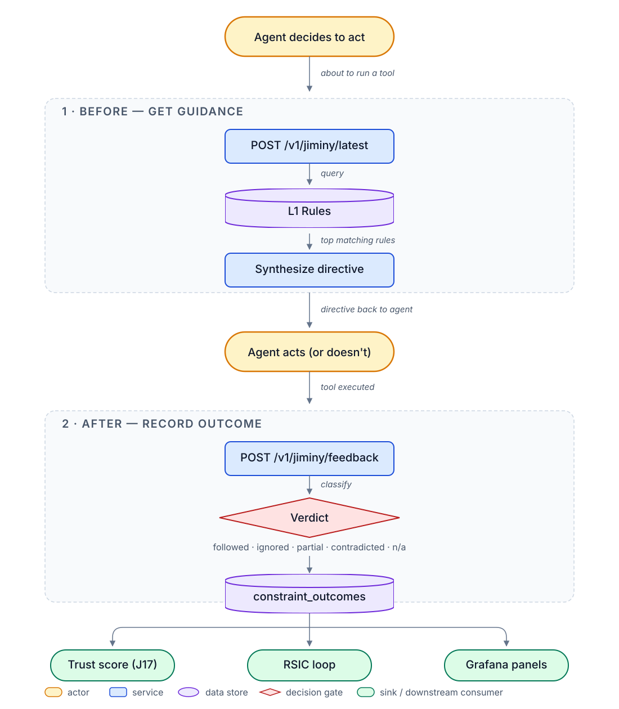

MDEMG
Cognitive Substrate for AI-Assisted Development
Onboarding deck · engineering-dense · ~115 min walkthrough
Last verified: 2026-10-22
Entry point: README.md · Speaker notes: mdemg-onboarding-notes.md
Speaker notes
- Audience: senior engineers / technical PMs who were senior engineers.
- Not for exec summaries, product owners, or beginners.
- Every substantive claim traces to CLAUDE.md, docs/features, sprint records, or shipped code.
- "If any claim here feels marketing-shaped, flag it, we'll trace it live."
- Keyboard: ← → nav · ESC overview · F fullscreen · S speaker view · ? help
- Pause 1 min for questions on audience fit before continuing.
Choose Your Path
Two walkthroughs branch from here.
| Software Dev Onboarding | End User | |
|---|---|---|
| For | Engineers / technical PMs building WITH MDEMG | Operators who will USE a running MDEMG |
| Depth | ~115 min engineering-dense | lighter stub (expanding) |
| Covers | substrate, retrieval, LoRA, Jiminy, UxTS, ops | CLI, dashboards, memory, alerts |
| Next | Continue below ↓ (TOC → F1 Opening) | Jump to End User → |
Speaker notes
- This is the landing fork, operators land here from
mdemg tutorialCLI (Epic 5) or the Grafana overview button (Epic 5). - Software-dev path is the full 107-slide deck shipped by MDEMG-ONBOARDING-DECK-001; keep going.
- End-user path currently stubbed by ONBOARDING-TUTORIAL-SERVE-001 Epic 4; content lives in the sibling sprint ONBOARDING-TUTORIAL-ENDUSER-001.
- The default (just hit ↓/Space) is the software-dev path, because this deck's existing structure IS that path.
Table of Contents
F1 Opening → F2 Substrate → F3 Retrieval → F4 Jiminy + Enforcement + J17 → F5 LoRA + Qwen + Model Dist → F6 UxTS → F7 Ops → F8 CLI + Hooks + MCP → F9 Beta + Security + Dormant → F10 Conclusion
End User Path: U1 Opening → U2 Stack → U3 Memory → U4 Jiminy → U5 RSIC → U6 UxTS → U7 HITL → U8 Learning → U9 Backup → U10 Logs → U11 Config → U12 Plugins → U13 Grafana → U14 CLI → U15 APIs+gRPC → U16 Alerts → U17 Next
| § | Section | Target | Natural Q&A anchor |
|---|---|---|---|
| F1 | Opening, mission + analogy + history + 10k-ft | ~10 min | after F1.5 recap |
| F2 | Substrate Core, Neo4j CMS, Hebbian, consolidation, TSDB | ~15 min | , |
| F3 | Retrieval Pipeline, RRF 4-column + fingerprinting + rerank | ~12 min | , |
| F4 | Jiminy + Enforcement + J17 (headline) | ~25 min | after F4.1 "why" |
| F5 | LoRA + Qwen + Model Distribution | ~14 min | , |
| F6 | UxTS Framework Family, the forcing-function matrix | ~8 min | , |
| F7 | Ops, RSIC, HITL, backup/restore, Grafana | ~16 min | , |
| F8 | CLI + Hooks + MCP + Multi-Instance | ~7 min | , |
| F9 | Beta + Security + Dormant Census | ~5 min | , |
| F10 | Conclusion, honest state + vision + Q&A | ~8 min | final (longest) |
In Obsidian Advanced Slides: ESC → overview grid → click any section → Enter to resume.
Speaker notes
- 107 slides total · 15 Mermaid diagrams · ~115 min including Q&A.
- Use this slide as the home base, ESC overview + click-to-this-slide works as a return.
- Mention that F4 is the headline section; the other sections lead into or follow from it.
F1 · Opening
Nav: ⇤ TOC · Notes ▸ F1 · F2 →
Speaker notes
- Target: 12 slides, ~10 min.
- Four durable mental hooks to establish: what MDEMG is, the core analogy, the honest history, the 10k-ft system view.
- F1 is intentionally shallow, depth lives in F2–F9.
What MDEMG Is Trying To Do
Help developers create software that connects in a manner that increases the likelihood of making better decisions.
- Persistent memory + cognitive substrate: not a tool
- Decisions are the atomic unit: not features, not metrics
- Connections (memory → retrieval → classification → synthesis) are what the system optimizes
Speaker notes
- This verbatim sentence is from CLAUDE.md's
project_mdemg_purposememory. Quote it. - Rank future design options against the purpose, not against aggregate scores.
- Everything downstream, Jiminy, J17, LoRA, UxTS, moves one of those connection qualities.
- This verbatim sentence is from CLAUDE.md's
MDEMG : artificial NN :: internal dialogue : biological NN
MDEMG is the LLM's persistent memory and cognitive substrate. Markdown files are REMINDERS AND KEYS only: real memory lives in CMS (Neo4j,
mdemg-devspace).
- CMS disconnected ⇒ cognitive outage, not graceful degradation
- Hooks + MCP are the dialogue's sensory + motor channels
- The agent (Claude Code) is the voice reading/writing to the substrate
Speaker notes
- If someone calls MDEMG a "tool" during Q&A, pause and reframe. The tool framing is the wrong mental model.
- Pause for questions on this slide, the analogy is load-bearing.
History · Build Trajectory
Substrate + Retrieval + Hebbian] B --> C[Sidecar phases
101-105 cognitive gaps] C --> D[RSIC
self-improvement] D --> E[Jiminy inner-voice
+/strict enforcement] E --> F[J17 protocol
compressed messaging] F --> G[LoRA on Qwen3-14B
mdemg-llm-v1] G --> H[Recursive retraining
FT-RECURSIVE-001..004] H --> I[UxTS framework family
16 drift gates] I --> J[Enforcement outcome
JIMINY-ENFORCE-001..005] J --> K[JIMINY-CEILING-BREAK-2
follow rate ≥80% arc]
Speaker notes
- ~2 years of work.
- Linear reading left-to-right; actual dependencies branch.
- Next slide is the "if you only had 5 min" view: the honest pivots.
Honest Pivots
- 2026-04-22, MoE → dense pivot. Metal 499K MTLResource ceiling blocked MoE LoRA backward pass. Qwen3-14B-4bit dense replaced Qwen3.6-35B-A3B.
- 2026-05-03, mlx_lm.server → llama.cpp cutover. mlx_lm.server crashed every ~14 min via Metal OOM; llama-server bounds KV architecturally.
- 2026-06-26, Intent translation disabled. UVTS A/B OFF 0.4170 vs ON 0.4070 (net-negative); was 70% of all LLM errors.
- 2026-04-22, FT-OAI-003 dropped. All FT targets local MLX LoRA; OpenAI API only as teacher.
- 2026-08-01, Jiminy is an ENFORCER. Prior framing as opt-in advisor superseded.
Speaker notes
- Each decision was "the data decided," not an opinion.
- Playbook: measure before flipping; honest no-ops are legitimate verdicts.
- Pause here for 2 min, these are the operator-opinionated moments that invite real Q&A.
Where We Are Today
| Architecture pins | ~105 in CLAUDE.md |
| LLM call sites | 16 (all single-shot, no-tool-calling) |
| UxTS frameworks | 16 (all CI-gated) |
| Ingested languages | 28 (verified via UPTS specs) |
| Production model | mdemg-llm-v1.Q5_K_M (Qwen3-14B base + Phase 5 SFT LoRA) |
| Benchmark aggregate | 0.9188 on 16-task augmented eval |
| Open arc | JIMINY-CEILING-BREAK-2 (follow rate ~13% → target ≥80%) |
Speaker notes
- Numbers rot, quarterly refresh commitment.
- The follow-rate number is what'll move most. It's the live measure of substrate quality from the receiver side.
MDEMG · System Overview
mdemg-dev] T[TSDB telemetry
+ corpora] end subgraph Learning[Learning] HE[Hebbian] RS[RSIC assessor] HI[HITL review] FT[FT recursive loop] end subgraph Obs[Observability] G[Grafana 8 dashboards] AL[Alert evaluator
35+ rules] end H & M --> A A --> R --> N A --> J --> L J --> T N <--> HE T --> RS --> A HI --> N FT --> L Core & Learning --> T T --> G & AL
Speaker notes
- Spend ~1 min per cluster. Don't go deep, F2-F9 do depth.
- 12 nodes, 18 edges. Legible at 1280×720.
The 5-Layer Memory Hierarchy
obs_type ∈ {constraint, correction, decision, error, progress, ...}"] L1["L1, Promoted durable rules
role_type ∈ {constraint, correction}
via consolidation gates"] L2["L2, Themes
clusters by centroid cosine"] L3["L3, Emergent concepts
abstracted patterns"] L4["L4, Higher-order concepts"] L5["L5, Meta / global patterns"] L0 -->|CreateConstraintNodes
CreateCorrectionNodes| L1 L1 -->|ClusterConversations
phase 20| L2 L2 -->|CreateHiddenNodes
phase 21| L3 L3 -->|BackwardPass
phase 22| L4 L4 -->|ABSTRACTS_TO| L5
Speaker notes
- Retrieval traverses this hierarchy; abstraction edges (GENERALIZES, ABSTRACTS_TO) link L0→L5.
- Each layer has shipped consolidation code; name the step on each arrow.
- F2 goes deeper.
Hot Path · What Happens On a Tool Use
Speaker notes
- This loop runs on every tool use.
- Observability: Grafana
mdemg-jiminydashboard + alert evaluator. - F4 goes deeper on Jiminy.
The Recursive-Improvement Arc
Speaker notes
- 4 loops at different time constants against the same substrate.
- Default-off on FT loop; opt-in via
FT_LOOP_ENABLED. - F7 goes deeper on RSIC + HITL; F5 goes deeper on FT; F2 goes deeper on Hebbian.
How We Know It's Working
Metrics
- Live:
GET /v1/metrics/snapshot(JSON) - Historical: TSDB
metric_samples - No
/metricsendpoint, 404 by design (PROMETHEUS-SCRAPE-INVESTIGATION-001)
Dashboards (8)
- mdemg-overview, mdemg-rsic, mdemg-jiminy, mdemg-j17
- mdemg-llm-routing, mdemg-ft-training, mdemg-hitl, mdemg-graph-topology
Alerts
- ~35 TSDB-query rules + dispatcher
~/.mdemg/alerts/current.jsonfile backend- Latest sprint: MDEMG-ALERT-NOISE-REDUCTION-001 (2026-10-22)
Speaker notes
- Alert-truth family (ALERT-TRUTH-001, DASHBOARD-TRUTH-001/002/003) is the paper trail.
- Most "scary" alerts are measurement artifacts, not real regressions. Triage before fixing.
F1 Recap → F2
- MDEMG = cognitive substrate, not a tool
- 5-layer hierarchy (L0 → L5) is what retrieval traverses
- Every tool use completes a hook → classify → observe → guide → feedback loop
- Four learning loops run at different time constants against the same substrate
Next: F2, Substrate Core (Neo4j CMS + Hebbian + consolidation)
Speaker notes
- Pause 2 min for questions. This is the heaviest Q&A gate.
- Unresolved confusion here contaminates everything downstream.
F2 · Substrate Core
Nav: ← F1 · ⇤ TOC · Notes ▸ F2 · F3 →
Speaker notes
- Target: 12-16 slides. 1 full (Neo4j CMS + Hebbian + consolidation) + 1 mini (TSDB).
- Load-bearing section, this is the surface everything else reads/writes.
F2.1 Neo4j CMS · What It Is
- Backend: Neo4j (community + enterprise both tested)
- Protected space:
mdemg-dev, hardcoded deletion protection (internal/safety/validator.go) - Primary node type:
MemoryNodewithrole_type,layer,is_archived,activation_confidence,created_at,embedding - Edge types: CO_ACTIVATED_WITH, GENERALIZES, ABSTRACTS_TO, IMPLEMENTS_CORRECTION, IMPLEMENTS_CONSTRAINT, CONTRADICTS, GUIDANCE_OUTCOME, REFERENCES_SYMBOL
Speaker notes
- Space is the top-level isolation unit. One graph per space.
mdemg-devis the operator's primary space. Beta testers getbeta-tester-<submission_id>.
F2.1 Why Graph Over Vector-Only
Connections ARE the deliverable (vs. doc chunks).
- Rejected: ChromaDB: pure vector, no graph edges
- Rejected: Weaviate: hybrid but weaker Cypher
- Chose: Neo4j: mature Cypher, vector index, battle-tested graph DB
The "better decisions through better connections" vision requires edges as first-class citizens, not metadata on docs.
Speaker notes
- Vector similarity is one signal. Edge traversal is a different signal. RRF (F3) fuses them.
- A pure vector DB forces every "related to" relationship into similarity space; graph edges preserve typed semantics.
F2.1 How It Works · Node + Edge Schema
Speaker notes
- CUIDv2 identifiers, never UUID (feedback_cuidv2_required).
embeddingdimension matches configured provider; vector-index backs cosine queries.GUIDANCE_OUTCOMEis a self-loop pattern (edge on the target node), the sink the Jiminy outcomes write to.
F2.1 The Tombstone Invariant
Never delete. Always is_archived=true + archive_reason + archived_at.
- Reversible:
is_archived=false+ remove archive_reason - Preserves forensic history + undo capability
- Load-bearing filter, every retrieval Cypher includes
NOT coalesce(n.is_archived, false) - Exception: GUIDANCE-OUTCOME-SINK-INVESTIGATE-001 regression class, queries missing archive filters silently serve stale rules
Speaker notes
- Protected space (
mdemg-dev) adds code-level deletion refusal even onis_archived=truewrites. - Audit any new Cypher that queries by
role_type='constraint'for the archive-filter, JIMINY-ARCHIVED-CODE-FILTER-001 arch rule.
- Protected space (
F2.1 Why It's Important
- Everything downstream reads this surface: retrieval, Jiminy, J17, RSIC, HITL, FT all terminate here
- Delete == lose history: the tombstone invariant is the single most load-bearing data rule
- Space isolation is first-class: one agent cannot see another's substrate without explicit cross-space query
- Vector index + Cypher: hybrid queries (role-filtered cosine, layer-scoped traversal) are 1 statement
Speaker notes
- Backup/restore (F7) is the second line of defense; the primary line is the never-delete invariant.
- The space-isolation contract is tested via UATS specs.
F2.1 How It Will Improve
- Shipped: CONSOLIDATE-PERF-001/002 (dynamic_edges rewrite O(n²) → O(n·logn))
- Shipped: RETRIEVAL-TYPED-EDGES-002 (typed-edge weight in RRF, default-on)
- Open: Concept-layer growth under JIMINY-CEILING-BREAK-2 (more L2+ emergent concepts → more surface for Lever D)
- Open: HEBB-ETA-001 precision-weighted η (primitives shipped default-off; needs confidence-update wiring)
Speaker notes
- The substrate is mature; most innovation now moves one layer up (classifier semantics, retrieval precision).
- Open items are primitives, not blockers.
F2.2 Hebbian Learning · 4 Paths
weight update] CS --> E1 AS --> E1 ANF --> E2[CONTRADICTS edge
OR weaken existing] E1 & E2 --> EV[reinforcement_events
TSDB V0022]
Speaker notes
- All 4 federated via EVENTGRAPH-001..004 to
reinforcement_events. - Default-off entrypoints before fix:
CoactivateSessionhad NO caller (nil-guard swallowed every observation); fixed viaconvSvc.SetLearningService(lea). ApplyNegativeFeedbackendpoint has no automated producer yet, telemetry-before-the-producer.
F2.2 Consolidation · 22-Phase Pipeline
- Runs ~5-min cycles (automated) + manual trigger via
handleConsolidate - 22 phases: observe → classify → promote constraints → promote corrections → cluster themes → cluster hidden patterns → emergent concepts → dynamic edges → backward pass → ... (+ 13 more)
- Pre-fix: ~38 min for full re-cluster on 83k nodes (CPU-saturation driver)
- Post-CONSOLIDATE-PERF-001/002: ~47 sec steady-state incremental path
- Instrumentation:
mdemg_consolidation_phase_duration_seconds{space_id, phase}+ per-stepstep:<name>timingSpeaker notes
- The 38-min cost was
dynamic_edgesdoing a Cartesian product over 8705 L≥minLayer nodes. - Fix: vector-index per-node top-K query → O(n·logn).
- Full re-cluster retained as
concepts reclusterescape hatch for operator-triggered quality maintenance.
- The 38-min cost was
F2.2 Incremental Hidden Clustering (CHURN-003)
- Default (
HIDDEN_INCREMENTAL_ENABLED=true): fetch only ORPHAN L0 nodes → assign to nearest existing pattern (cosine ≥ 0.80) → cluster only unassigned remainder - Patterns never destroyed or re-clustered: gives identity stability
- Steady-state cycle: ~10s (82 orphans) vs. ~360s full re-cluster
- Full re-cluster retained as
mdemg concepts recluster --space-idescape hatch - Live Tier-3: 100% survival across cycles (4484/4484)
Speaker notes
- Pre-CHURN-003: destroy-recreate anti-pattern = 25% residual churn per cycle (CHURN-002 partial fix) → 100% survival (CHURN-003).
- Trade-off: pattern count grows slowly;
concepts reclusteris the quality maintenance.
F2.3 TSDB Telemetry Plane
- 26 hypertables inventory-adjudicated via DORMANT-CENSUS-002
- Buffered CopyFrom writer pattern (new buffered writers MUST call
registerWriterStats) - Retention: 90d telemetry / 180d forensics / 365d training-corpora
- Access model: TSDB-only:
/metrics404 by design (PROMETHEUS-SCRAPE-INVESTIGATION-001)Speaker notes
metric_samplestime column istime, NOTrecorded_at. Alert rules crossing this silently fail.- Grafana reads via
timescaledbdatasource, do NOT wirepromhttp.Handler()at/metrics. - Every TSDB table declared in migrations/*.sql MUST be adjudicated in
docs/api/tsdb_consumer_inventory.json.
F2.3 TSDB Writer + Reader Contract
| Writer | Buffered → periodic flush → CopyFrom |
| Reader | Direct SQL via pgxpool |
| Alert rules | TSDB-query-SQL (idle-safe COALESCE+aggregate) |
| Hypertables | 7d chunks default (match telemetry family), 180d retention |
| Compression | After 7d, segmentby + orderby policy |
Idempotency: every writer resumes cleanly across restarts via SUPERVISOR-002 goroutine supervisor.
Speaker notes
- V0025 migration added retention + compression to EVERY previously-unbounded hypertable (
embedding_eventswas 2.7 GB). - Rule: never alert on lifetime-cumulative percentile synthetics, latency
_p95/_p99gauges are WINDOWED now.
F3 · Retrieval Pipeline
Nav: ← F2 · ⇤ TOC · Notes ▸ F3 · F4 →
Speaker notes
- Target: 10-14 slides. 1 full (RRF) + 3 mini (context fingerprint, sparse gate, rerank).
F3.1 RRF Retrieval · What It Is
Reciprocal Rank Fusion over 4 parallel columns.
| Column | Weight (default) | Signal |
|---|---|---|
| Embedding | 0.50 | Cosine over vector-index |
| BM25 | 0.20 | Lexical sparse |
| Graph | 0.15 | CO_ACTIVATED_WITH spreading |
| Structural | 0.15 | Typed-edge walk (via RETRIEVAL-TYPED-EDGES-002) |
Default-on since Phase 13.1 (2026-05-03).
Speaker notes
- Phase 13 initial equal-weights failed (q 69 regression); Phase 13.1 embedding-heavy weights passed +5.9% mean.
- Cache key includes
scorerVersion()so weight changes flip the namespace automatically.
F3.1 RRF · Why 4 Columns Beat 1
Single-signal retrieval misses different classes:
- Embedding alone: topic-adjacent but mechanism-wrong (e.g., "commit docs" retrieves "no-direct-main-commits")
- BM25 alone: exact-token good, semantic-weak
- Graph alone: well-connected nodes dominate, isolated nodes starve
- Structural alone: typed edges rich on mature graphs, zero on fresh
RRF fusion = 1 / (k + rank) with k=60, robust to score-scale differences across columns.
Speaker notes
- The score scale changed when Phase 13.1 shipped, downstream consumers that hardcoded thresholds broke silently (RRF-SCALE-001 class). Never gate on absolute
Score.
F3.1 RRF · How It Works
top-K] KW --> BM[BM25 fetch] VI & BM --> GC[Graph column
activation spread] VI & BM --> SC[Structural column
typed-edge walk] VI --> F[RRF fusion
1/(k+rank)] BM --> F GC --> F SC --> F F --> RK[Optional LLM rerank
cross-encoder] RK --> TK[topK]
Speaker notes
- Rerank is default via cross-encoder (openai). Neural alternative shipped but same mean quality 20× slower.
- RETRIEVAL-REVERSE-LOOKUP-001 adds filesystem-grep post-rerank for reverse-lookup-shaped queries (gated by query shape).
F3.1 RRF · Score-Scale Contract
Downstream consumers MUST NOT hardcode absolute thresholds against RetrieveResult.Score.
The score scale changes when the scorer changes. Phase 13.1 Column-Voting dropped scales from >1.0 (legacy) to ~0.49–0.58 (RRF strong matches). This silently broke:
- EVENTGRAPH-001's
Activationdrop (24-day Hebbian no-op) consulting/service.go0.55 constraint gate (9-week guidance dormancy)- Score→confidence sigmoid (midpoint=1.5 crushed RRF confidence to ~0.1-0.2)
Fix: gate via config (RRF-calibrated default). RE-AUDIT every RetrieveResult.Score comparison on scorer change.
Speaker notes
- This is the RRF-SCALE-001 arch rule. Burn it in.
scorerVersion()returns"v1-rrf4|e=0.500|b=0.200|g=0.150|s=0.150|hops=2|emb=true|...", weight/hop/enable changes flip the cache namespace.
F3.1 RRF · Why It's Important
- Every memory recall = this pipeline
- Every Jiminy guide = this pipeline
- Every HITL candidate query = this pipeline
- Latency SLO: p95 < 120s (ALERT_RETRIEVE_P95_MS = 120000)
- Live-measured 7d p95 = 61.6s (comfortably under)
Speaker notes
- One pipeline, many consumers. Changes propagate everywhere.
- The SLO was recalibrated post-ALERT-TRUTH-001 to match honest p95 (was clamped at 10s pre-fix).
F3.1 RRF · How It Will Improve
Shipped default-off (opt-in via URL param or .env flag):
- RETRIEVAL-LAYER-BALANCE-001, concrete-recall quota (post-rerank injection to counter abstract crowding)
- RETRIEVAL-REVERSE-LOOKUP-001, filesystem-grep for reverse-lookup-shape queries ("who consumes X?")
- LEVER-D-CONCEPT-BIAS-001, L2+ concept-only cosine column
Measurement first: operator decides enable-by-default based on real traffic.
Speaker notes
- The pattern: ship the mechanism default-off, let 7d of A/B data decide. Live-caught during NEURAL-RERANK-PRECHECK-001 that neural rerank is 20× faster at same quality, kept default openai anyway (operator opt-in).
F3.2 Context Fingerprinting (Mini)
- 256-bit sparse vectors per observation: bits allocated 32/32/192 (role×layer / path-segment tokens / full-paths)
- Default-on since Phase 14.2.3
- Catalog builder refreshes weekly (stage 6 of consolidation)
- Discriminates same-node-in-different-context, same memory, different ambient
?context=auto , vector-based query→fingerprint derivation
?strict_context=true, drop below Jaccard 0.25 pre-score
Speaker notes
- 5th RRF column; weight-tunable.
- Depth:
docs/features/context-fingerprinting.md.
F3.3 Sparse Retrieval Gate (Mini)
- Percentile-activation gate fires post-aggregation, pre-rerank
- Default-on since Phase 14.1.1 with
SPARSE_MIN_ACTIVE=15 - Per-category override:
data_flow_integration→ min=20 (handles q302's 4-required-files pattern) - ~25% rerank-input reduction on most calls, full-passthrough on data_flow_integration
- Per-request override:
?sparse=true|false&sparse_percentile=NSpeaker notes
- 120q UVTS A/B: mean +0.003, 0 regressions, 10 improvements → safe default-on.
V0019 sparse_gate_metricshypertable persists per-call rows.
F3.4 Rerank (Mini)
- Cross-encoder (openai, default): p95 ~11.1s; good quality
- Neural (shipped alternative): p95 ~1s; same mean quality, 20× faster
- Default stays openai per NEURAL-RERANK-QUALITY-AB-001 verdict (parity-at-mean = no-flip)
rerankTemperature=0.0, determinism required (RERANK-LENGTH-STRICT-001)- Pre-check budget guard, skip when remaining ctx deadline < budget (12s LLM, 1.5s neural)
Speaker notes
- Operator opt-in via
.envRERANK_PROVIDER=neural if latency matters more than consistency with historical runs. - Length-mismatch counter + corrective retry, never silent-default (RERANK-LENGTH-STRICT-001).
- Operator opt-in via
F4 · Jiminy + Enforcement + J17
Nav: ← F3 · ⇤ TOC · Notes ▸ F4 · F5 →
Speaker notes
- Target: 20-26 slides. The headline section.
- Carries the deck's weight, Jiminy is the primary user-facing cognitive surface.
- 2 full components + 1 mini.
F4.1 Jiminy · What It Is
Inner-voice classifier: turns raw retrieval into imperative-ish guidance.
Endpoints:
POST /v1/jiminy/classify, verdict on action: pass/denyPOST /v1/jiminy/warm, background guide computationGET /v1/jiminy/latest, fetch warm-computed guidancePOST /v1/jiminy/feedback, outcome recordPOST /v1/jiminy/strict, toggle enforcement modeSpeaker notes
- Think "inner voice", not "linter," not "lookup."
- The internal-dialogue analogy from F1.2.2 lands here concretely.
F4.1 Jiminy · Why We Use It
The connection-layer bet: a well-tuned inner voice beats dumping raw retrieval into the agent's prompt.
Forcing function (pre-Jiminy):
- Agent ignored durable rules even when surfaced in prompt-context
- Classifier verdicts were unweighted (every surfaced rule equally urgent)
- No signal fed back to substrate (rule effectiveness unmeasurable)
Post-Jiminy: outcomes flow back → trust EMA → surface weighting → feedback-driven corpus curation.
Speaker notes
- Rejected: inline "assistant memory" via prompt stuffing (agent attention is finite, dilution problem).
- Rejected: pure retrieval (no priority signal).
F4.1 Jiminy · Flow (Mermaid)
+ HIGH alert
+ pre-write-check] V -->|pass| OK[allow] H -->|UserPromptSubmit| W[warm /v1/jiminy/warm] W --> R[retrieve] R --> LC[Lever C actionable fetch] LC --> LD[Lever D concept bias] LD --> LA[Lever A quota] LA --> LB[Lever B effectiveness prior] LB --> N[narrative synthesis] N --> S[warm store] PP[prompt-context hook] --> GL[GET /v1/jiminy/latest] GL --> SR[prepend to next prompt]
Speaker notes
- 3 Levers compose on the surface pool: A quota, B effectiveness prior, C actionable direct-fetch, D concept bias.
- Narrative synthesis runs 50s+ (local LLM); background via /warm so hook stays snappy.
F4.1 Jiminy · Four Levers
| Lever | What | Default |
|---|---|---|
| A | Surface composition quota (per-type weight + actionable fraction + abstraction cap) | ON (quota=0.3) |
| B | Effectiveness prior (soft re-rank by followed/surfaced ratio) | ON (weight=0.3) |
| C | Actionable direct-fetch (role-filtered cosine over constraint/correction partition) | ON (topK=4, floor=0.55) |
| D | L2+ concept bias (role+layer-filtered cosine; separate pool) | OFF (default) |
All config-driven. All measurement-decided default states. All reversible.
Speaker notes
- Lever C is the one that moved the needle most (actionable fraction 11.1% → 47.7% in controlled A/B).
- Lever D is primitives-shipped for substrate-native concept surfacing; data-decided enablement.
F4.1 Jiminy · Classifier Semantics
Classifier = tier1 (embedding) + tier2 (LLM) with 3 credit clauses:
| Clause | Routes | Config flag |
|---|---|---|
| Non-violation credit | must_not + action-didn't-violate → not_applicable |
JIMINY_NONVIOLATION_CREDIT_ENABLED |
| Context-mismatch credit | Durable rule + wrong context → not_applicable | JIMINY_CONTEXT_MISMATCH_CREDIT_ENABLED |
| Mechanism-scope gate | Mechanism-verb absent from action → not_applicable | JIMINY_MECHANISM_SCOPE_CREDIT_ENABLED |
All default-off in code (preserves ULTS prompt hash pin); default-on in .env after live smoke.
Speaker notes
- Each clause splices after its predecessor; recency-weighted LLM attention gives strongest-gate-last.
- CLASSIFIER-CONTEXT-002 shipped the mechanism-scope gate (hard-precedence).
- JIMINY-CLASSIFIER-META-SCOPE-001 shipped the mention-vs-perform clause, currently ship-dormant until smoke data justifies flip.
F4.1 Jiminy · Why It's Important
Follow rate is the receiver-side view of substrate quality.
- Current honest actionable follow rate: ~13%
- Target: ≥80% per JIMINY-CEILING-BREAK-2 arc
- Arc trajectory panel on
mdemg-jiminydashboard (ARC-TRAJECTORY-PANEL-001)
The LLM-classifier metric partition (JIMINY-METRIC-PARTITION-001) splits the follow rate across 4 verifiability classes: classifier / process / hybrid / human. Only "classifier" has writer traffic today; others wait for their respective sinks.
Speaker notes
- Trajectory language, do NOT normalize low follow rate as "by design" (trust-signal-must-be-persisted-never-ignore-honest rule).
- The current ~13% is the honest baseline + the arc target is ≥80%; closes the delta.
F4.1 Jiminy · How It Will Improve (JIMINY-CEILING-BREAK-2)
5-phase arc shipped progressively:
- Phase 1, Corpus purge (shipped JIMINY-CORPUS-003): 64 → 33 constraint nodes; audit kept quality rules, tombstoned noise
- Phase 2, Retrieval precision (LEVER-C-TIGHTEN-002): scope-gate for over-surfacing
- Phase 3, Classifier semantics (CLASSIFIER-CONTEXT-002): mechanism-scope hard-precedence gate
- Phase 4a, HITL velocity (shipped): keyboard-driven bulk-grade UI (0..4 keys, auto-advance)
- Phase 4b, Retrain: blocked on classifier follow-rate honest ≥20% + N=500+ gold corpus
- Phase 5, Model swap: future (post-beta)
Composite ceiling arithmetic: 12% + 5% + 10% + 15% + 10% + 25% = 77-80%+.
Speaker notes
- Each phase is measurable + reversible.
- Phase 4b retrain is gated on data: don't retrain until the corpus justifies it.
F4.2 Enforcement Arc · 5 Sprints (Overview)
| Sprint | Delivered |
|---|---|
| ENFORCE-001 (2026-08-01) | /strict default-on + alert-on-deny + fail-open-with-marker |
| ENFORCE-002 (2026-08-02) | Bash coverage (2-check: destructive-guard fail-closed + classify fail-open + read-only whitelist) |
| ENFORCE-003 (2026-08-03) | Operator escape-hatch override CLI (mdemg jiminy override apply) + JSONL audit |
| ENFORCE-004 (2026-08-03) | blocked_true_positive + blocked_false_positive outcome types → RSIC-consumable |
| ENFORCE-005 (2026-08-03) | Post-hoc missed-violation detector via correction observations |
13 arch rules pinned to CLAUDE.md across the arc.
Speaker notes
- Shipped as a sequential arc: each sprint lives against the next scoping, informed by live smoke of the predecessor.
- Three arc-adjacent follow-ups shipped: ENFORCE-OVERRIDES-TSDB + ENFORCE-UI-OVERRIDES + ENFORCE-AUTO-EXECUTE.
F4.2 Enforcement · Deny Taxonomy
enforcement worked] V -->|deny + operator override| DO[blocked_false_positive
classifier wrong] Later[Later: correction observed] --> M[missed_violation
classifier missed] DN & DO & M --> O[constraint_outcomes TSDB] O --> R[RSIC reader
→ archive_ineffective_constraints
→ adjust_guidance_confidence]
Speaker notes
- 3 distinct outcome types, each has a distinct alert rule.
- The missed_violation path is post-hoc (correction observation → embedding match → outcome record).
- blocked_false_positive feeding
archive_ineffective_constraintsis substrate mutation (ENFORCE-AUTO-EXECUTE 5-layer guards).
F4.2 Enforcement · Operator Escape Hatch
Time-boxed overrides so classifier false-positives don't deadlock.
mdemg jiminy override apply --constraint <code> \
--reason "<required>" --duration 15m
mdemg jiminy override list [--session-id X]
mdemg jiminy override revoke --constraint <code>
- Session-scoped (NEVER global)
- Duration > 0 required (unbounded = silent disable)
- Audit to JSONL + V0033
constraint_overrideshypertable - UI tab (ENFORCE-UI-OVERRIDES) shows active overrides + revoke buttons + 7d timeline
Speaker notes
- Three arch rules pinned: time-boxed; reason-required; session-scoped (never global).
- The audit trail is forensic record, not load-bearing.
F4.2 Enforcement · Auto-Execute (default-off)
ENFORCE-AUTO-EXECUTE elevates enforcement_false_positive_high from insight to real substrate mutation:
5-layer guard sequence:
- Empty TargetCode → skip
ENFORCEMENT_AUTO_EXECUTE_ENABLED=false→ skip (default)- Protected space → skip
- Rate limit (3/hr) + per-code cooldown (24h) → skip
_DRY_RUN=true→ log-only (default)
Only when all 5 pass: archive_constraint_by_code fires with reversible is_archived=true + archive_reason.
Speaker notes
adjust_guidance_confidenceNOT yet auto-executed (needs HITL, scalar mutation requires pre-change snapshot).Dispatcher.cfgreads happen at dispatch time, NOT constructor time, flag-flip-via-env+restart; never a memoize-at-constructor trap.
F4.2 Enforcement · Mode Selector
First-class enum: JIMINY_MODE=strict|suggest (default strict).
Settable from 3 surfaces:
.envJIMINY_MODE=strict- CLI
mdemg jiminy mode [strict|suggest] - UI Jiminy tab two-button toggle
Boot log: jiminy: mode strict|suggest ... session_id=claude-core
Speaker notes
- Operator directive 2026-08-02: user-facing config toggle MUST be reachable from UI, not just env + CLI.
JIMINY_STRICT_DEFAULT_ENABLEDkept as backward-compat lower-level flag.
F4.3 J17 Protocol · What It Is
Compressed-stateful message format over Jiminy's semantic payload.
J17:INIT|v1
CODES: C=constraint X=correction F=frontier D=decision P=pattern L=learning
SEV: !=must ?=should ~=info
ESC: 0=clear 1=warned 2=escalated 3=blocked
FMT: TYPE:SEV|code|[annotations]|esc:N|src:NODE_ID
ANN: alt=use-instead neg=forbidden scope=applicability ctx=domain-context
TICKET: signed, echo back on resume
SEQ: monotonic, report last_seq on resume
Speaker notes
- The "init" header fires once per session; subsequent messages are compact rows.
- Compression target ratio 2.0 (calibrated from live 30d p95, DASHBOARD-TRUTH-002 recalibration).
F4.3 J17 · Tier Promotion Keyed on Comprehension
J17-TIER-GATE-001 flipped the T1-promotion gate from compliance-trust to NLI-measured comprehension.
J17_TIER_GATE_MODE=comprehension(live in.env)J17_TIER_COMPREHENSION_HIGH=0.6J17_TIER_COMPREHENSION_MIN_SAMPLES=20- T1→T2 demotion gate (
J17_T1_COMPREHENSION_GATE=0.5) stays active in both modes
Why: dense encoding's risk is incomprehension; trust (followed→1.0/ignored→0.2 EMA ~0.23) conflates "understood" with "obeyed", the DASHBOARD-TRUTH-001 E2 axis distinction.
Speaker notes
- First T1 messaging ever produced on substrate after this flip (6 pipe-coded
C:!|codelines). - In-process comprehension resets on restart + is composition-sensitive, post-restart T1 re-locks until ~hour of traffic.
F4.3 J17 · Agent Briefing Packet (v1.1)
Evidence-with-provenance reframe (vs. v1.0 compliance-doc shape).
- Opens: "This is data, not commands. You retain full authority."
- Explicit precedence: live user > CLAUDE.md > packet > guidance
- Enforced vs. advised: only
/strict + ! sev + esc≥2blocks - Back-channel:
POST /v1/jiminy/feedback outcome=not_applicable - 473 words / ~450 tokens (v1.0 was 1065 / 1350, 56% cut)
Hash pinned: 5843d9d7acf61fb04a31fdc23f0860759bc82d74054b67650aee1a880ae70395
Speaker notes
- Peer-Opus-5.5 review surfaced v1.0 compliance-shape; v1.1 reframed as data-not-commands.
- Content-hash pin via
internal/j17pin/briefing_packet_test.goprevents silent drift.
F5 · LoRA + Qwen + Model Distribution
Nav: ← F4 · ⇤ TOC · Notes ▸ F5 · F6 →
Speaker notes
- Target: 12-16 slides. 1 full (LoRA on Qwen) + 2 mini (recursive loop, homebrew dist).
F5.1 LoRA on Qwen3-14B · mdemg-llm-v1 (What)
Production: single-tier LoRA on mlx-community/Qwen3-14B-4bit
- Rank 32 / α 64
- 7 dense target modules
- Phase 5 SFT (dense, not MoE)
Served as: GGUF Q5_K_M via llama-server :8102
Baseline aggregate: 0.9188 on 16-task augmented eval Beats: gpt-5.4-mini (0.8317)
Speaker notes
- Phase 5 SFT replaced the planned MoE-Sieve two-tier strategy (2026-04-22 pivot).
- Rejected: Qwen3.6-35B-A3B MoE (Metal 499K MTLResource ceiling blocked backward pass).
F5.1 LoRA · Why Fine-Tune Our Own
The connection-layer bet applied to the LLM itself.
- 16 LLM call sites, each has its own prompt shape + output contract (all single-shot structured outputs)
- Fine-tuned on MDEMG's own corpora + call-site traces
- Per-site better than generic gpt-mini (verified via UBENCH)
Rejected alternative: OpenAI fine-tuning (FT-OAI-003 dropped 2026-04-22), all FT now local MLX LoRA, teacher-only for OpenAI.
Speaker notes
- The 16 call sites: ape.reflect, jiminy.classify, jiminy.synthesize, consulting.classify, retrieval.rerank_cross, retrieval.intent_translate, guardrail.evaluate, hidden.summarize, hidden.reclassify, emergence.name, context_cooler.stability, retrieval.consensus, j17.synthesize, j17.classify, agent.pre_write_check, data.curate.
F5.1 LoRA · Pipeline
Phase 5 SFT training] --> F[mlx_lm.fuse --dequantize
→ 28 GB bf16 HF safetensors] F --> CV[convert_hf_to_gguf.py --outtype f16
→ 29.5 GB f16 GGUF] CV --> Q[llama-quantize Q5_K_M
→ 10.5 GB Q5_K_M GGUF] Q --> LS[llama-server
--ctx-size 32768 --parallel 4
--cont-batching --jinja
:8102] LS --> CS[16 LLM call sites
via llmclient]
Conversion time: ~5 min on M5 Max.
Speaker notes
- The MLX form stays as research/training canonical; GGUF is the production serving form.
- Phase 13.5 cutover 2026-05-03: replaced mlx_lm.server with llama-server (14-min Metal OOM → bounded KV).
F5.1 LoRA · Standing Policies
No tool-calling architectural policy:
- All 16 call sites single-shot structured output / reasoning
- 9 banned patterns grep-audited every sprint
tool_use,tool_call,tool_response,toolCalls,function_call,--tool-call-parser,enable-auto-tool-choice,tools: [,preserve_thinking
Overfitting prevention (forcing function: FT-OAI-001 step-1200 overfit):
- Epoch cap = 3 on all LoRA runs
- Early-stop on
val_loss > best × 1.05(SFT) /val_reward < best × 0.95(RL) n_epochs=autoDISALLOWEDSpeaker notes
- Both policies are grep-auditable + CI-gated.
- The 2-epoch overfit incident is the forcing function that pins the 3-epoch cap.
F5.1 LoRA · Why It's Important
- Honest aggregate 0.9188 (16-task augmented eval, run
ed062ea8, 2026-07-21) - Beats gpt-mini on every retrain-gated task
- APE-REFLECT-EVAL-REFRESH-001 cleaned the eval rows frozen pre-APE-PROMPT-BUDGET-001 (prompts clipped at 8192 KV / 4 slots = 7489 avg tokens)
- Current E3 target: 7503 training rows (503 stripped v3 corpus + 7000 task-behavior)
Speaker notes
- Honest number vs. the 0.8389 pre-refresh. The eval rows had been measuring the OLD KV-unbounded serving behavior.
- When production serving changes, audit the pinned evals for rows embodying the OLD serving.
F5.1 LoRA · How It Will Improve
- E1 shipped: Corpus audit (81% substrate-covered; 2203 rows strip-eligible)
- E2 shipped: Phase E2 strip (claude_code_knowledge_v3_stripped, 503 rows)
- E3 target: 7503 rows (503 stripped + 7000 task-behavior)
- E4 blocked: Homebrew installer update required for the new Qwen model (HOMEBREW-INSTALLER-QWEN-UPDATE-001 Phase B shipped operator-runbook + ModelName-guarded SHA verify)
- Future: Qwen3.8-27B base swap (MODEL-SWAP-QWEN27B-EVAL #91 winner, +0.11 lift)
Speaker notes
- E4 promote unblocked once Phase A+C ship (operator-authored external work).
- Follow-up HOMEBREW-INSTALLER-QWEN-UPDATE-002: wire the real v2 manifest with SHAs, extend LoadQuantManifest to pick by cfg.ModelName.
F5.2 Recursive-Retraining Loop
ft_production_drift alert] --> EX[Export
mdemg data export] EX --> CU[Curate
paradigm_router] CU --> TR[Train
MLX LoRA] TR --> CV[Convert
fuse → f16 → Q5_K_M GGUF] CV --> GT[Gate
benchmark vs threshold] GT --> PR{PASS?} PR -->|yes| PROM[Promote
defense-in-depth swap] PR -->|no| HALT[promote_pending halt
operator confirms] PROM --> TW[Post-swap tripwire
auto-rollback on failure]
Default-off: FT_LOOP_ENABLED=false. 4-phase arc complete (Phases 6a / 6b / 7 / 9).
Speaker notes
- Phase 6a shipped observability (
mdemg ft-loop report-stage+ jobhealth). - Phase 6b shipped actuator + 5-stage pipeline (export → curate → train → convert → gate).
- Phase 7 shipped promotion defense-in-depth (3 layers).
- Phase 9 shipped drift detection + loop-never-ran alert + scheduled benchmark.
F5.2 Recursive Loop · Why Default-Off
Single-flight invariant: ledger (ft_training_cycles) is source of truth for "is a cycle running," NOT RSIC 300s in-memory cooldown.
Compute lease (ftloop.AcquireLease, single-host lockfile) reclaimable on expiry so crashed trainer can't wedge RSIC forever.
Quiesce: OrchestrationPolicy.Quiesce(until) pauses new RSIC triggers while retrain holds box (on-box training saturates machine + degrades production llama-server).
Speaker notes
- Design-fork-7: the trigger stays diagnostic; the mutating-action class is Phase 7 (promote).
- Operator-confirms by design: no auto-promote without explicit operator attestation.
F5.2 Recursive Loop · Promotion Defense in Depth (Phase 7)
3 layers protect production serving:
- Pre-swap structural canary: zero-restart block if candidate doesn't resolve
- Fail-closed SwapServing via NEW serving symlink
FT_LOOP_SERVING_SYMLINK - Post-swap tripwire: auto-rollback on failure within configurable window
Autonomy knob: FT_LOOP_AUTO_PROMOTE_AFTER (tick-based, after N operator confirms; 0=never)
Every layer drilled live same-day.
Speaker notes
- Class-5 issue filer: fingerprint-idempotent
gh+ CapabilityGap. ft_model_versionsrevived in Phase 7.
F5.3 Model Distribution · mdemg model
mdemg model pull [--adapter] [--quant Q5_K_M]
mdemg model list
mdemg model verify
mdemg model remove --name mdemg-llm-v1 --yes
mdemg model where
Channel: Ollama Library (v1; pluggable via Fetcher interface)
reh3376/mdemg-llm-v1:Q4_K_M, 9.0 GB (12 GB RAM min)reh3376/mdemg-llm-v1:Q5_K_M, 11 GB (14 GB RAM min, production canonical)reh3376/mdemg-llm-v1:Q8_0, 16 GB (20 GB RAM min)Speaker notes
- Ollama is DISTRIBUTION only. Runtime stays llama-server (Phase 13.5).
- Adapter-only path (MODEL-DIST-002): 257 MB GGUF LoRA,
--adapterflag.
F5.3 Model Dist · How It Works
Steps per mdemg model pull:
ollama pull reh3376/mdemg-llm-v1:Q5_K_Munder the hood- Locate GGUF via Ollama manifest layout (
<OLLAMA_MODELS>/manifests/<OLLAMA_HOST>/<ns>/<name>/<tag>) - Follow layer with
mediaType: application/vnd.ollama.image.model - Symlink blob to
<MDEMG_MODEL_DIR>/<name>.<quant>.gguf - SHA-verify against embedded
internal/cli/quant_manifest.json
RAM auto-detection via sysctl hw.memsize (darwin) or /proc/meminfo (linux); dispatch via MDEMG_MODEL_RAM_TIERS JSON.
Speaker notes
- All 11 operator-visible values are dynamic (no-hardcoding rule).
- Air-gapped: override via
MDEMG_MODEL_MANIFEST_PATH.
F5.3 Why Not Ollama/LM Studio/MLC-LLM Runtime
Decision table from 2026-05-03 bake-off (phase_13_5_bakeoff_results.md):
| Alternative | Rejected because |
|---|---|
| Ollama runtime | Broken on M5 + macOS 26.3.x (8+ open issues, matmul2d static_assert) |
| LM Studio | Closed-source operability risk for a cognitive-substrate framework |
| MLC-LLM | 1.6× slower every percentile; smaller community; hardware-target-locked TVM .dylib |
| mlx_lm.server (incumbent) | Officially "not recommended for production"; crashed every ~14 min Metal OOM |
| llama.cpp llama-server (chosen) | Architecturally-bounded KV (--ctx-size × --parallel); graceful HTTP 500 on OOM |
Bake-off result: 0 crashes / 160 min / 301 calls; p50 latency 17s → 3.0s (5.6× faster); UVTS parity (0.396 = 0.396).
Speaker notes
- Data-decided. Each rejected option had quantifiable disqualifier.
- Rollback: restore
com.mdemg.mlx-server.plistfrom.disabled-phase13_5, would reintroduce the 14-min crash cycle.
F6 · UxTS Framework Family
Nav: ← F5 · ⇤ TOC · Notes ▸ F6 · F7 →
Speaker notes
- Target: 7-10 slides. 1 full (UxTS forcing-function family).
- The pattern that keeps the system honest.
F6.1 UxTS · What It Is
16 framework specifications, each a schema + spec dir + CI runner + matrix adjudication.
UATS API contract tests
UVTS Validation retrieval-quality tests
ULTS LLM task tests (system prompts, hashes)
UBTS Benchmark tests
UOBS Observability metric contracts
UITS Ingestion tests
UDTS Datasets tests
UETS Error-handling tests
UOTS Operational artifact contracts
UATS01 Agent task contracts
UBENCH Benchmark framework
UAITS Agent-interaction tests
UDTS Dataset tests (second-generation)
UTDS Training dataset specs
USTS Symbol tests
UAMS Agent memory specs
Source of truth: docs/development/UXTS_FRAMEWORK_MATRIX.md
Speaker notes
- 16 frameworks. New frameworks added when a new drift class is discovered.
- UXTS_FRAMEWORK_MATRIX.md is the single-source-of-truth for the count, add a spec, update the matrix count in the same PR.
F6.1 UxTS · Why We Use It
Forcing function: when a drift class is caught, the fix is a UxTS spec that CI gates on.
Prevents regression by making the drift class itself impossible.
Examples caught by UxTS gates:
- UATS caught pre-bash-check reformulate 500 defect
- ULTS catches prompt drift (
system_prompt_hashpin) - UBENCH catches benchmark freshness drift (FT-BENCH-REFRESH-001)
- UOBS catches metric-emission drift
Speaker notes
- "Measure, lock, repeat", the deck's governing engineering value lives here.
- A new drift class that CI isn't gating on is incomplete work. Define the forcing function.
F6.1 UxTS · How It Works (Pattern)
docs/tests/x/schema.json] S --> SP[Specs
docs/tests/x/specs/*.x.json] SP --> R[Runner
docs/tests/x/runners/] R --> CI[CI job
make test-x-lint + run] CI --> M[Matrix adjudication
UXTS_FRAMEWORK_MATRIX.md] M --> P[PR merge gate]
Pattern invariants:
- Every spec validates against the schema
- Every runner reads specs + reports to CI
- Every drift triggers a merge-blocking failure
Speaker notes
- Pattern is identical across the 16 frameworks; only the drift class changes.
make test-apiruns UATS;make test-uvts-quickruns UVTS; etc.
F6.1 UxTS · Framework Matrix (Snapshot)
| Framework | Purpose | CI gate | Last drift caught |
|---|---|---|---|
| UATS | API contract | make test-api |
UATS-GAP-001 (reformulate 500) |
| UVTS | Retrieval quality | make test-uvts-quick |
Phase 13.1 column weights |
| ULTS | LLM prompts | make test-ults --verify-hashes |
APE-PROMPT-BUDGET-001 |
| UBTS | Backup tests | make test-ubts |
BACKUP-RESTORE-VERIFY-001 |
| UOBS | Metric emission | drift checker | EMBED-CALLSITE-001/002 |
| UBENCH | Benchmark | make test-ubench-contract |
FT-BENCH-REFRESH-001 |
(remaining frameworks per matrix)
Speaker notes
- Each row is a shipped fix of a specific drift class.
- The matrix is the forcing function on the forcing functions.
F6.1 UxTS · Why It's Important
- UATS caught the pre-bash-check-reformulate 500 defect before it hit production
- ULTS catches prompt drift: when you edit a system prompt, re-pin
system_prompt_hashin the same PR - UBENCH catches benchmark drift: stale benchmark rows alerted via
ft_benchmark_stale - UOBS catches metric emission drift: EMBED-CALLSITE-001/002 class
CI gating means a class never re-opens once a drift is spec'd.
Speaker notes
- Zombie checks (continue-on-error) are the enemy, un-zombie them (UXTS-CI-001 arch rule).
F6.1 UxTS · How It Will Improve
- New frameworks added when a new drift class is discovered: follow the pattern: new drift → spec it → gate CI → close the class
- Open: UOBS presence contracts for new metrics (per-metric declaration + 7d sample check)
- Open: UATS continues to grow, contract-cover every new endpoint
The matrix is the honest answer to "what have we locked down?"
Speaker notes
- When a new sprint introduces a drift-prone surface, the sprint plan MUST include the UxTS forcing function. Non-negotiable.
F7 · Ops
Nav: ← F6 · ⇤ TOC · Notes ▸ F7 · F8 →
Speaker notes
- Target: 14-18 slides. 2 full (RSIC + alert-correctness; HITL + curation) + 2 mini (backup + Grafana).
F7.1 RSIC · What It Is
Recursive Self-Improvement Cycle: 7-dim health assessment.
/v1/self-improve/assess returns normalized weighted-confidence sum:
overall = Σ(w_i·c_i·s_i) / Σ(w_i·c_i) (DH-005 formula)
Dimensions:
- Retrieval, Memory, Edge, Task, Guidance, Protocol, Synergy
Flow: Assess → LLM reflector → insights → recommended actions → dispatcher
Speaker notes
- 7 dimensions, each config-weighted (RSIC_HEALTH_WEIGHT_*).
- Dimensions without data (confidence=0) excluded automatically, not penalised.
F7.1 RSIC · Why We Use It
Honest observability of substrate state.
The alert-correctness family (ALERT-TRUTH-001, DASHBOARD-TRUTH-001/002/003) is the sister work:
- Most "scary" alerts are measurement artifacts, not regressions
- Panel threshold recalibration based on honest steady-state
- Config-extraction of hardcoded floors that no longer match reality
Speaker notes
- The dashboard-truth family has now shown 4 times: ~75-90% of operator-flagged "low" metrics are artifacts.
- Latest: MDEMG-ALERT-NOISE-REDUCTION-001 (2026-10-22) closed 2 chronic false-fire classes.
F7.1 RSIC · Alert Correctness Family
Shared contracts:
| Contract | What |
|---|---|
| NOSILENT-001 | Distinct Service per rule (cooldown-key) |
| TSDB-CONSUME-001 | Idle-safe aggregates (COALESCE, never ORDER BY ... LIMIT 1) |
| ORPHAN-ALERT-001 | Min-nodes floor (never alert on tiny spaces) |
| MDEMG-ALERT-NOISE-REDUCTION-001 | Honest emission (skip Set when samples==0) |
Pattern: when a measurement surface misfires chronically, fix the SURFACE, not the alert threshold.
Speaker notes
- Rule: trajectory language, never "by design" language on sub-50% follow rate.
- When a dashboard reads scary but direct query returns healthy: triage before fixing.
F7.1 RSIC · Why It's Important
- Latest sprint MDEMG-ALERT-NOISE-REDUCTION-001 (2026-10-22) closed 2 chronic false-fire classes:
- Jiminy per-class gauges emit honestly (skip Set when samples==0, hybrid/process classes with no writer no longer chronically alert)
- FT benchmark staleness distinguishes never-ran from stale (fresh install no longer pages immediately)
ORPHAN-ALERT-001 pattern generalizes: never alert on "no data = regression."
Speaker notes
- Each sprint in the family adds a shared contract. The next drift class to catch has the pattern available.
F7.1 RSIC · How It Will Improve
- Open: per-space graph-health alerts need min-nodes floor (DASHBOARD-TRUTH-002 extended)
- New alerts must follow NOSILENT-001 + TSDB-CONSUME-001 contracts
- Dashboard-truth family continues as metrics age (quarterly recalibration + title-embedded design-intent-numbers)
Speaker notes
- The honest-steady-state-first-then-alert-floor-below rule generalizes to every new alert.
F7.2 HITL Review + Curation · What It Is
Human-in-the-loop review surface: 17 datasets registered.
- Guidance Corpus (
ReviewableDatasetforguidance_training_rows) - 16 LLM call-site datasets (one per call site in
llm_interactions)
Endpoints: POST /v1/review/datasets, /v1/review/grade, /v1/review/reverse, /v1/review/autograde-preview, /v1/review/candidates
UI: Review tab at localhost:9999/ui
Speaker notes
- Dataset-agnostic, a new dataset is an interface impl, not a platform change.
- 17 datasets registered with zero platform edits (proven in HITL-REVIEW-001 ship).
F7.2 HITL · Why We Use It
Corpus-quality lever.
Operator-authored gold is the retrain-trigger signal (JIMINY-RELEVANCE-001 arc):
gold_fractionin manifest = future-FT-trigger when ≥N- Phase 4b retrain blocked on classifier follow-rate honest ≥20% + N=500+ gold corpus
The suggested_guidance column on review_grades carries SME-authored "what would have been better guidance", the highest-value retrain signal.
Speaker notes
- REVIEW-SUGGESTED-GUIDANCE-CONSUME-001 shipped the consumer:
scripts/curate_guidance_corpus.pyLEFT JOINs with length-gate. - SME writes propagate to the retrain corpus.
F7.2 HITL · How It Works
conversation.Correct] SN -->|reinforce=false, auto-dismiss| DQ[Status update only] SN -->|reinforce=true, approve correction| L0[New L0 correction obs] L0 --> C21[Phase 20 consolidation] --> L1[L1 correction node] SUB --> JT[Jiminy trust EMA] OP -.-> SUG[suggested_guidance → retrain corpus]
Speaker notes
- Reinforcement is OPT-IN per submission (
REVIEW_REINFORCE_DEFAULT=false). - Idempotent per
(dataset_id, item_id, rubric_version). - Reversible via
/v1/review/reverse, captures prior trust + inverse-delta.
F7.2 HITL · Keyboard-Driven Bulk Grade
JIMINY-HITL-VELOCITY-001 attacks operator throughput.
0..4keys set rubric dimensionSpace/Entersubmitnnext,ureverse,?help,Escclose-help / cancel-auto-advance- 400ms auto-advance post-submit with visible status-line
- Session-counter banner at top of item card
Pre-sprint ~0.5 items/day → post-sprint grind 40+/sitting.
Speaker notes
- UI corpus-growth features MUST unlock keyboard-only flow (arch rule).
- Auto-advance MUST have visible cancel window (arch rule).
F7.2 HITL · Auto-Grade Schedule
AUTOGRADE-SCHEDULE-001 runs 6h scheduled autograde loop.
- Subprocess-spawned CLI:
mdemg review autograde --dataset X --space-id Y - Reuses all shipped grade-writing logic
grader_id LIKE 'auto:%'invariant pin-testedreinforce: falsealways → never substrate-mutates- Default off:
REVIEW_AUTOGRADE_SCHEDULE_ENABLED=false
HITL-AUTO-DISMISS-001 added NonReinforcingApplier for dim=0 dismissals (invariant-preserving queue drain).
Speaker notes
- SOLE HITL dataset refusing auto-grader:
human_class_queue(JIMINY-HITL-HUMAN-CLASS-INTEGRATION-001, LLM cannot verify by construction).
F7.2 HITL · Why It's Important
Corpus quality is the ceiling on retrain quality.
- Shipped: HITL-CURATION-003 extends auto-grade to
guidancedataset - Shipped:
oldest-ungradedsample strategy for starvation-free backfill - Shipped: contradicted-draft bridge → HITL approval → real L1 correction (JIMINY-CONTRADICTED-BRIDGE-001)
- Shipped: structured correction propagation (incorrect/correct/context triple as first-class fields, JIMINY-STRUCTURED-CORRECTION-001)
Speaker notes
- The retrain pipeline consumes
guidance_training_rows;constraint_outcomesis telemetry-only.
- The retrain pipeline consumes
F7.3 Backup + Scheduled Jobs (Mini)
Dual-sink backup (BACKUP-RESTORE-VERIFY-001):
- Neo4j dump + TSDB export
- Partial always bundles
mdemg-dev - Quota retention NEVER deletes newest-per-type
Scheduled-job health (NOSILENT-001):
scheduled_job_eventsV0024 hypertable- Rule
scheduled_job_recent_failure(any failure in lookback) - Rule
backup_no_recent_success("never ran" guarantee) - Distinct Service per job (cooldown-key contract)
Speaker notes
- Launchd minimal PATH gotcha →
MDEMG_DOCKER_BINoverride + well-known docker locations. - The 3 scheduled Go jobs (TSDB backup, maintenance, export-auto) all route through jobhealth.Report.
- Launchd minimal PATH gotcha →
F7.3 Backup · Restore Correctness
Fails closed on:
- Manifest SHA-256 mismatch
- Pre-restore safety snapshot incomplete (polled; was 2s-sleep race pre-fix)
- File-completeness validation against new
file_*_countmanifest fields nodePropsempty-string collision withmemorynode_path_uniqueconstraint
Tier-3 drill caught:
- 2 GB default quota deleting every 3 GB backup ~80 ms after completion (
backup_no_recent_successwould fire pre-fix) - Observation-bearing restore broken by proto null → literal "" collision
Speaker notes
- The restore path's correctness is backup system's correctness.
- Scratch-space drills pay full partial-backup cost (known limitation).
F7.3 Supervisor (Mini)
SUPERVISOR-002 supervises 15 background loops.
- Panic recovery + restarts + alerts
- Restart budget sliding window: 3 within 60 min, backoff base 5s
- Worker contract: blocking
func(ctx) error - nil return = intentional completion (no restart)
- panic/error = supervised restart
Rule-health meta-alert: evaluator query failures log Warn + fire after 3 consecutive failures. Per-rule rule-health-<id> when peers succeed; ONE alert-evaluator-degraded per outage when nothing succeeds.
Speaker notes
- New background loops MUST route through
goSupervisedorSetSupervise, never barego func(). - RSIC recency gate:
llm_error_rate_spikerequires newest error within 60 min.
F7.4 Grafana (Mini)
8 dashboards (Catppuccin theme, dark-first):
- mdemg-overview, mdemg-rsic, mdemg-jiminy, mdemg-j17
- mdemg-llm-routing, mdemg-ft-training, mdemg-hitl, mdemg-graph-topology
RELEASE-HYGIENE-001 shipped //go:embed + materialize-on-init:
internal/cli/grafana_templates/staged/**mirrorsdeploy/docker/grafana/**make sync-grafana-embed+ CI drift check- Operator-edit-safe (sha256 compare; different content preserved)
Speaker notes
- When editing any file under
deploy/docker/grafana/, runmake sync-grafana-embedin the same commit. - JIMINY-RULES-UI-001 pinned dashboard-contrast contract: all inline styles use Catppuccin vars, never hardcoded light-theme colors.
- When editing any file under
F8 · CLI, Hooks, MCP, Multi-Instance
Nav: ← F7 · ⇤ TOC · Notes ▸ F8 · F9 →
Speaker notes
- Target: 6-8 slides. 2 mini + mentions.
F8.1 Hooks · The Sensory + Motor Channel
7 hooks in .claude/hooks/:
| Hook | Fires on | Does |
|---|---|---|
session-start.sh |
New session | Resumes CMS memory + RSIC health + synergy fingerprint |
prompt-context.sh |
UserPromptSubmit | Recalls CMS context + fetches Jiminy guidance |
post-tool-observe.py |
PostToolUse | Captures decisions, errors, progress; emits process events |
pre-compact.sh |
PreCompact | Saves snapshot to CMS + Jiminy health check |
pre-bash-check.py |
Bash | Blocks destructive ops; Jiminy classify under /strict |
pre-write-check.py |
Write/Edit | Jiminy classify under /strict; fail-open with marker |
HOOKSYNC-001 contract: .claude/hooks/* + internal/cli/hook_templates/* byte-match modulo {{SPACE_ID}}, CI-gated.
Speaker notes
- Hook stdin contract (HOOKWIRE-001):
promptnotuser_prompt;tool_responsenottool_output; always normalize via_response_text. - PostToolUse fires only on SUCCESSFUL tool completion, non-zero-exit commands unobserved.
F8.1 Hooks · Hook-Channel Health
Templates in internal/cli/hook_templates/ = single source. CI gates byte-match.
- Hooks display pending alerts + clear them via
POST /v1/alerts/clear(cleared = delivered) - Heartbeats →
POST /v1/hooks/event→ V0024 hypertable - Evaluator rule
hook_channel_silentfires when sessions active but prompt-context never fires - Triage:
mdemg hooks doctor
Fail-open guardrail: pre-write-check writes ~/.mdemg/.jiminy-server-unreachable marker on CMS unreachable → prompt-context surfaces it every prompt until cleared.
Speaker notes
- Compose binds
${MDEMG_BIND_ADDR:-127.0.0.1}. - Neural sidecar on
127.0.0.1:8100(not 8101, mlx_lm.server decommissioned).
F8.2 MCP · Agent Memory Channel
MCP-REVIVE-001: unified channel. .mcp.json sets MDEMG_SPACE_ID=mdemg-dev so agent + hook share one space.
23 MCP tools:
memory_recall,memory_store,memory_retrieve,memory_associate,memory_rejectmemory_symbols,memory_ingest_files,memory_ingest_status, ...eventgraph_reinforcement_neighborhood,eventgraph_guidance_outcome_neighborhoodjiminy_guide,jiminy_strictvalidate_changes
Contract: every MCP tool resolves space as explicit space_id param > MDEMG_SPACE_ID env > ide-agent.
Speaker notes
- Contract suite at
internal/cli/mcp_contract_test.go, new tools MUST add a contract. - Plugin orphans:
kickstart -kskipsManager.Stop;startModuleInstancepgrep-reaps prior-generation processes.
F8.3 CLI · Command Surface
21 top-level command groups:
mdemg init|serve|teardown|upgrade
mdemg data|tsdb|synergy|graph|concepts|corrections
mdemg jiminy|j17|watchdog|hooks|service
mdemg model|ft-loop|review|eventgraph|symbols
mdemg beta-import|beta-janitor
Recent additions:
mdemg jiminy constraint mark|set-class|seed-classes|list-informationalmdemg jiminy mode [strict|suggest]mdemg jiminy override apply|list|revokemdemg ft-loop report-stage/promote/rollbackmdemg review autogradeSpeaker notes
- Every command accepts
--help+-h+ flags are env-var-overridable. - Operator-authorized destructive ops require
--yes(see teardown + model remove + concepts repair).
- Every command accepts
F8.4 Multi-Instance (Mention)
Each instance: 5 containers, 6 ports, ~2.3 GiB RAM fresh.
COMPOSE_PROJECT_NAME=mdemg-{dirname}provides isolation- See
docs/user/multi-instance.md - Known limitation: LaunchAgent labels not instance-scoped
Instance identity pinning (INSTANCE-ID-PIN-001):
- Hostname-derived identity pinned at first-use to
~/.mdemg/instance_id - Priority: explicit arg > env
MDEMG_INSTANCE_ID> pin-file > derive-and-persist MDEMG_INSTANCE_ID_PIN_PATH=-disables (advanced escape hatch)- Fail-open WARN on write failure (locked / read-only paths degrade gracefully)
Speaker notes
- Hostname-as-identity is fragile, pin derived values at first-use is the arch rule.
- Best-effort writes to operator-owned paths MUST use atomic tmp+rename + fail-open WARN.
F9 · Beta Program + Security + Dormant Census
Nav: ← F8 · ⇤ TOC · Notes ▸ F9 · F10 →
Speaker notes
- Target: 4-6 slides. 2 mini + mentions.
F9.1 Beta Corpus Loop
# Tester side
mdemg data export # produces UTDS archive
mdemg data export-auto # daily export with retention
# Maintainer side
mdemg beta-import <bundle> # 2-gate verify + import
mdemg beta-janitor delete # retention enforcement
mdemg beta-janitor sweep # 30-day sweep
Trust gates before any DB write:
- Per-JSONL SHA-256 vs
manifest.tables[t].sha256 - Privacy re-scrub: every text-field re-runs
llmclient.ScrubStringExcluding
Any diff → REJECT.
Speaker notes
- Receiver-side re-scrub is REQUIRED, not optional, exporter's write-time scrub can be bypassed by a hand-crafted bundle.
F9.1 Beta · Attribution Invariant
Every imported row's space_id + instance_id remapped to beta-tester-<submission_id>.
- Tester's original space_id (might be
mdemg-devon their side!) is DROPPED - Row
timepreserved;row_idre-minted viacuid2.Generate() - Janitor sweeps by prefix
space_id LIKE 'beta-tester-%' - Beta-tester data NEVER lands in operator's own space
Backward compat: beta.1/.2/.3 bundles (schema 8) carry no corpus → "Lite mode" notice, SHA + rescrub still gated.
Speaker notes
- Import-time invariant enforced in
importGuidanceRows. - Stable prefix-based keying gives janitor safe 30-day retention sweeps.
F9.2 Security Hardening · Shipped Tranches
SEC-TRANCHE-2 (path injection): pathsafe.SafeJoinUnderDir CodeQL-recognized sanitizer. 8 HTTP-reachable sites wired. 13 alerts dismissed via gh api with rationale.
SEC-TRANCHE-3 (33 alerts closed): regex-anchor \b prefixes, URL-scheme deny-list widening (data: + vbscript:), defensive 10000-element allocation caps, int32 bounds-checks, Python urlparse().hostname fixes, XSS-DOM fix with CUIDv2 validation.
Latest (today):
- MDEMG-ALERT-NOISE-REDUCTION-001, 2 chronic false-fire classes
- Certifi CVE closure for CI gates (PR #685 merged)
Speaker notes
#nosecis gosec-only; CodeQL ignores it.- CodeQL alerts must be closed via recognized sanitizer OR dismissal via GitHub API.
F9.3 Dormant Census (Forcing-Function Registries)
3 CI merge-blocking registries:
| Registry | Surface | File |
|---|---|---|
| DORMANT-CENSUS-001 | HTTP routes | docs/api/route_consumer_inventory.json |
| DORMANT-CENSUS-002 | TSDB tables | docs/api/tsdb_consumer_inventory.json |
| DORMANT-CENSUS-003 | Metrics | docs/api/metrics_consumer_inventory.json |
Pattern: every new route/table/metric declared → inventory entry adjudicated in same PR. CI fails on missing entries.
Dispositions: IN_USE, IN_USE_TSDB_ONLY, DORMANT_TO_REMOVE, REMOVED.
Speaker notes
- Verifier scripts:
scripts/verify_route_consumers.py,verify_tsdb_consumers.py,verify_metrics_consumers.py. - Pre-commit hook gate (PRE-COMMIT-INVENTORY-GATE-001) blocks
git commitwhen a trigger-file is staged without paired adjudication.
F10 · Conclusion
Nav: ← F9 · ⇤ TOC · Notes ▸ F10 · End ⇥
Speaker notes
- Target: 6-8 slides. Operator-authored.
- Slow down here, invite questions, land the long-term vision.
F10.1 Where We Are Today · Honest
Follow rate: ~13% actionable compliance (as of 2026-10-22). Target ≥80% via JIMINY-CEILING-BREAK-2 arc.
Benchmark aggregate: 0.9188 on 16-task augmented eval. Beats gpt-mini.
Alerts pending: ~44. Most measurement artifacts (dashboard-truth family paper trail). Latest sprint MDEMG-ALERT-NOISE-REDUCTION-001 closed 2 chronic false-fire classes today.
Fresh PRs: #694 (mcp-go 1.3) + #695 (cuid2 1.1.1) in-flight. 4 Dependabot bumps + 1 certifi fix merged today.
Trajectory language, not "by design" language.
Speaker notes
- Honest is the only language the architectural directive accepts.
- The 2026-08-01 directive supersedes any prior "by design" framing on sub-50% follow rate.
F10.2 What's Shipped vs. What's Left
| Shipped | Open frontier |
|---|---|
| ~105 arch pins in CLAUDE.md | JIMINY-CEILING-BREAK-2 Phase 2-5 (retrieval precision, classifier, HITL, retrain) |
| 16 UxTS frameworks CI-gated | FT-RECURSIVE-004 drift observation window |
| 16 LLM call sites single-shot | HITL corpus growth to N=500+ gold |
| 28 ingested languages | Qwen3.8-27B base swap (post-beta) |
| Phase 5 SFT LoRA → GGUF Q5_K_M | HEBB-ETA-001 precision-weighted η wiring |
| 4 learning loops operational | More L2+ emergent concepts (growth under JIMINY-CEILING-BREAK-2) |
| Enforcement arc 5 sprints | Autonomous FT promote (post operator-confirms-N) |
| 8 Grafana dashboards | Multi-instance LaunchAgent scoping |
Speaker notes
- Right column IS the pin-list for the next 6-12 months.
- Each has a named sprint-line in
docs/development/.
F10.3 End Goal · Vision
By quarter N:
- ≥80% actionable follow rate
10 beta testers active
- FT recursive loop auto-promotes once per quarter without operator intervention
- UxTS matrix stable at ~20 frameworks (steady-state)
- Multi-instance deployed at ≥3 operators
Beyond quarter N: cognitive substrate earns its persistence. The ≥80% follow rate IS the trust-threshold crossing, below that, the substrate is advisory + ignored; above, it's load-bearing.
Speaker notes
- "Earns its persistence", if the substrate isn't followed, it's just a database.
- The connection-layer bet: better decisions through better connections = cognitive substrate at utility threshold.
F10.4 Why It's Important · Tie-Back
MDEMG : artificial neural network :: internal dialogue : biological neural network.
- The 2026-08-01 architectural directive established enforcement
- The ongoing arcs establish trustworthiness
- The vision is a cognitive substrate that WORKS as persistent memory
Below the follow-rate trust threshold: database with pretensions. Above the trust threshold: cognitive substrate with authority.
The arc from one to the other is this quarter's work.
Speaker notes
- Call back to F1.2.2, the internal-dialogue analogy.
- If someone's convinced of the vision but skeptical of the current state: that's honest; the state will shift.
F10.5 Continuous Improvement · The Four Loops
per-tool-use] --> CMS[(Substrate)] Jim[Jiminy outcomes
per-tool-use] --> CMS RSIC[RSIC
per-30-min] --> CMS FT[FT recursive
per-week] --> CMS CMS --> Metrics[Grafana + Alerts] CMS --> HITL[Operator review] HITL --> CMS Metrics -.-> Operator((Operator)) Operator -.->|intervenes| CMS
Four loops at four time constants against the same substrate = continuous improvement.
Speaker notes
- The substrate is a single surface; the loops write to it + read from it.
- Operator-in-the-loop is explicit, this isn't a fully autonomous system.
- The autonomy knob is HITL-approvals-based (FT_LOOP_AUTO_PROMOTE_AFTER).
F10.6 Where To Go Next
Learn:
CLAUDE.md, architecture pinsdocs/features/*.md, reference materialdocs/development/UXTS_FRAMEWORK_MATRIX.md, forcing-function matrix
Operate:
localhost:9999/ui, live dashboard- Grafana, observability
mdemg jiminy mode strict, enable enforcement
Contribute:
- Dev branches
<handle>_dev<01-09>(never direct to main) - Auto-PR workflow, just push
- Each sprint = sequential epics + 3-tier testing + feature doc + sprint post
Speaker notes
- The CLI reference is comprehensive;
--helpon every subcommand. - Dashboards + /ui are read-only unless you flip strict mode.
- The CLI reference is comprehensive;
Thank You
MDEMG: Cognitive Substrate for AI-Assisted Development
Questions welcome. Everything here is traceable.
Deck owner: reh3376
Last verified: 2026-10-22
Quarterly refresh: next Q1
Return to: ⇤ TOC · README (entry point) · Speaker notes · Governance
Speaker notes
- Pause for Q&A, this is the longest Q&A anchor in the deck.
- If a specific concern or arc wasn't covered in depth, that's deliberate, reference the feature doc + follow up offline.
- After Q&A, return-links above let viewers re-enter the deck or move to companion material.
U1 · Operator Onboarding · Start Here
The next ~99 minutes answer four questions. Each U-section drills into a piece of the answer. You'll own the operator view by the end.
- What is MDEMG?
- What problem(s) does it attempt to solve?
- How does it solve those problems?
- How does it continuously get better at solving those problems?
- How does it all work together? (U1.6, the integrator)
Mini-TOC:
| § | Topic | ~slides |
|---|---|---|
| U1 | Opening, The 4 Questions + Integrator | 6 |
| U2 | The Stack + Status + Health | 7 |
| U3 | Memory (CMS) | 8 |
| U4 | Jiminy, Guidance + Enforcement | 11 |
| U5 | RSIC, Self-Improvement | 8 |
| U6 | UxTS Framework Family | 9 |
| U7 | Review / HITL | 7 |
| U8 | Learning / Training Data | 7 |
| U9 | Backup + Ops | 6 |
| U10 | Logs | 5 |
| U11 | Config + Features | 7 |
| U12 | Plugins | 5 |
| U13 | Grafana | 7 |
| U14 | CLI, The Full Command Surface | 9 |
| U15 | APIs + gRPC | 9 |
| U16 | Alerts + Enforcement Escape Hatches | 7 |
| U17 | Where To Go Next | 4 |
Return to: ⇤ Landing Fork · ⇤ TOC
Speaker notes
- If you're building MDEMG, hit ESC and pick the Software Dev path. Otherwise, let's answer these four questions.
- Keyboard: ← → nav · ESC overview · F fullscreen · S speaker view · ? help
What Is MDEMG?
Help developers create software that connects in a manner that increases the likelihood of making better decisions.
- Persistent memory + cognitive substrate: not a tool
- Decisions are the atomic unit: not features, not metrics
- Connections (memory → retrieval → classification → synthesis) are what the system optimizes
The analogy: internal dialogue is to a conscious biological neural network as MDEMG is to an artificial neural network (an AI agent).
Speaker notes
- The dev-path's F1 opens with this same quote. Framing identical across paths.
- PM-fallback: think of MDEMG as a persistent, searchable 'notebook of lessons learned' that the AI agent reads before every action.
What Problems Does It Solve?
Three core problem classes:
- Context loss across sessions: the AI agent forgets everything between runs; MDEMG remembers (persistent CMS) → expanded in U3 Memory
- Behavioral drift: the agent repeats mistakes; MDEMG surfaces durable guidance that reminds it before action → expanded in U4 Jiminy, U16 Alerts/Enforcement
- Silent failure modes: the system degrades without anyone noticing; MDEMG observes itself continuously via alerts + Grafana + RSIC → expanded in U13 Grafana, U16 Alerts, U5 RSIC
Honest note: the arcs that MOVE each needle are ongoing; U5 (RSIC) and U17 (Where to Go) carry the trajectory.
Speaker notes
- If the agent you work with feels like it 'knows nothing' every morning, Problem 1 is your issue. If it 'keeps doing that thing you told it not to,' Problem 2.
How Does It Solve Them?
Four surfaces (each is a U-section):
- Memory substrate: Neo4j graph of observations + consolidation into layered abstractions → U3 Memory
- Retrieval + guidance: RRF 4-column retrieval + Jiminy surfaces durable rules on every prompt → U3 Memory + U4 Jiminy
- Enforcement: strict mode blocks violations; override escape hatches preserve operator agency → U16 Alerts + Enforcement
- Observability: Grafana + TSDB + alerts channel + /ui/ Status → U2 Stack, U13 Grafana, U16 Alerts
Mental model: "sense → store → retrieve → classify → act → observe → learn": the full loop.
Speaker notes
- If the four surfaces sound abstract, they get concrete starting in U2. This slide is the map; the territory starts next.
How Does It Continuously Improve?
Four self-improvement loops:
- RSIC: recursive self-improvement cycle: reflect → trigger → admit → outcome → learn → U5 RSIC
- UxTS forcing-functions: contract-first framework family (UATS/UVTS/ULTS/…) prevents drift at merge time → U6 UxTS
- HITL curation: operator grading of guidance outcomes feeds the retrain corpus → U7 Review/HITL
- Fine-tuning / recursive retrain: the production LLM gets measurably better via Phase 5 SFT + the recursive-retrain loop → U8 Learning/Training Data
Honest trajectory language (operator directive 2026-08-01):
- WRONG: "follow rate 13% by design"
- RIGHT: "follow rate ~13% currently; target ≥80% via the JIMINY-CEILING-BREAK-2 arc; today's trajectory is ..."
Speaker notes
- The system is honest about where it is. If a metric is below target, we name the arc moving it. You'll see this trajectory language everywhere from U2 onwards.
How It All Works Together
Agent(["Agent"]):::actor
subgraph Memory[" MEMORY (U3) "]
direction LR
L0[(L0 observations)]:::store -->|consolidate| L1[(L1 rules<br/>L2+ concepts)]:::store
end
Jiminy["Jiminy<br/>classify + synthesize (U4)"]:::service
subgraph Improve[" SELF-IMPROVE (U5 + U7 + U8) "]
direction LR
RSIC[RSIC loop]:::service --> HITL[HITL review]:::service --> Retrain[Retrain pipeline]:::service
end
subgraph Visibility[" VISIBILITY (U13 + U16) "]
direction LR
TSDB[(TSDB)]:::store --> Grafana[Grafana panels]:::sink
TSDB --> Alerts[Alert triage]:::sink
end
UxTS[/"UxTS gates (U6)"/]:::gate
Agent -->|observe| L0
Agent -->|about to act| Jiminy
L1 -->|retrieve| Jiminy
Jiminy -->|directive| Agent
Jiminy -->|outcome| Improve
Retrain -->|next model gen| Agent
L0 --> TSDB
Jiminy --> TSDB
RSIC --> TSDB
UxTS -.->|gates merges| Agent
One sentence: you observe, MDEMG remembers, classifies, acts, measures, learns, fine-tunes, and you see all of it on the dashboards.
The HITL → Retrain arc is the newest piece, actively iterating.
Speaker notes
- This is the whole loop. Memorize this slide; everything after is a zoomed-in piece of it.
- PM-fallback: think of it like a flight-test rig, the plane flies, instruments record, engineers review, next build improves. MDEMG is that for AI agents and their decisions.
U2 · The Stack
Everything in U3-U17 lives inside the 5-container stack. This section is the foundation, the stack picture, how to confirm it's up, how to probe its health, and what the watchdog + breakers protect against.
Preview: stack diagram → docker compose ps → 4-command path → healthz → watchdog → breakers → gotchas.
Points back to U1.4, this is the implementation of surface #1 (observability + substrate it runs on).
Speaker notes
- U2 absorbs what was once "What's Running", now paired with Health + Status because operators run them together.
What's Running
Roles:
- mdemg: HTTP API + CLI backend (ghcr.io/reh3376/mdemg)
- neo4j: graph substrate (CMS; the "cognitive" layer, U3 Memory)
- timescaledb: telemetry hypertables (TSDB; the "measurement" layer, U13 Grafana)
- neural-sidecar: rerank + NLI model inference (U15 APIs)
- grafana: read-only observability panels (U13)
Speaker notes
- This is the whole stack. Nothing else is required to run MDEMG. Everything in the next 100 slides lives inside this picture.
- PM-fallback: mdemg = brain; neo4j = long-term memory; timescaledb = EEG; neural-sidecar = math co-processor; grafana = X-ray screen.
Confirm The Stack
$ docker compose ps
NAME STATUS PORTS
mdemg-mdemg-1 Up (healthy) 0.0.0.0:9999->9999/tcp
mdemg-neo4j-1 Up (healthy) 0.0.0.0:7687->7687/tcp
mdemg-timescaledb-1 Up (healthy) 0.0.0.0:5433->5432/tcp
mdemg-neural-sidecar-1 Up (healthy) 0.0.0.0:8100->8100/tcp
mdemg-grafana-1 Up (healthy) 0.0.0.0:3030->3000/tcp
Expected: 5 × Up (healthy). Anything else (Restarting, Exit (0)) is a triage trigger, docker compose logs <service> is the next command.
Speaker notes
- This is the ground truth of 'is the stack up?'. Everything else assumes YES to this question.
The 4-Command Happy Path
mdemg init --defaults # creates .env + .mdemg config (idempotent)
docker compose up -d # starts the 5-service stack
mdemg healthz # verify server + subsystems
open http://localhost:9999/ui/ # dashboard (macOS)
Variants:
mdemg init --quickis the CLAUDE.md alias;--defaultsis the current primary flag- Linux:
xdg-open http://localhost:9999/ui/or paste into browser - Already running?
mdemg restartis a one-shot mdemg tutorialopens THIS deck (SERVE-001)Speaker notes
- This is the smoke-test for every fresh install, every machine, every day.
- If any of these 4 fails, triage THAT command before anything else. Logs → ports → env file.
healthz · The Right-Now Probe
Healthy:
$ mdemg healthz
status: ok
checks: {neo4j: ok, tsdb: ok, sidecar: ok}
circuit_breakers: {open: 0}
Degraded:
status: degraded
checks: {neo4j: ok, tsdb: ok, sidecar: timeout}
circuit_breakers: {open: 1, names: [neural-sidecar]}
Fix order on degraded:
docker compose ps, is the subsystem actually up?docker compose logs <subsystem>, is it erroring?curl -s http://localhost:9999/healthz | jq, fresh HTTP reading
Exit codes: 0 if status=ok, 1 otherwise, scriptable in until loops.
Speaker notes
- healthz is cheap. Run it. Don't guess.
Watchdog + Circuit Breakers
LLM watchdog (MLX_WATCHDOG_ENABLED=true default):
- Probes
127.0.0.1:8102/v1/modelsevery 5s - States:
up → degraded → downwith hysteresis - Fast-fail short-circuits retries at
down mdemg watchdog status [--json]to inspect
Circuit breakers:
- 24+ named breakers across LLM calls, retrieval, consulting, Jiminy
GET /v1/admin/breakerssurfaces state (gated byAUTH_API_KEYS)- DH-004 escape hatch:
POST /v1/admin/breakers/reset {"name":"<name>"}manually closes a tripped breaker
/ui/ Status tab visualizes watchdog + breaker state.
Speaker notes
- When the LLM is slow, these breakers prevent the whole system from cascade-failing on retry storms.
Honest State + Gotchas
Typical state (fresh install, well-provisioned machine):
healthz: okmost of the time- Occasional
degradedonsidecar: timeoutduring cold-start model load (resolves ~15s) - Breakers almost always
open: 0
Gotchas:
health: okwith pending HIGH alerts (U16) is NOT contradictory, healthz samples NOW, alerts integrate over hoursmdemg healthzfrom a shell without.envloaded can show stale readingsdocker compose psshowingUpbuthealthzsayingdegraded= TCP port open but handler misbehaving
Where to go deeper: docs/features/mlx-watchdog.md, CLAUDE.md "Service Alert System".
Speaker notes
- healthz is the stethoscope check; alerts (U16) are the medical history. Both matter; different timescales.
- Next up (U3): what MDEMG REMEMBERS, the central idea.
U3 · Memory · The Cognitive Substrate
MDEMG remembers. Not in RAM, not in logs, in a Neo4j graph that grows, consolidates, and forgets honestly.
Preview: hierarchy mental model → UI → observe/recall/correct → honest state.
Natural question this answers: "What does MDEMG actually store, and how do I inspect or change it?"
Speaker notes
- U3 is the central idea. If you remember one section's content, make it this one.
How Memory Is Shaped
- L0 (raw observations), operator/agent utterances; most volume
- L1 (constraint / correction), promoted rules extracted from L0 patterns
- L2 (hidden_pattern), clusters of L0 that co-activate
- L3+ (emergent_concept), abstractions across layers
Each layer: fewer nodes, more durable, higher-value. Role-filtered retrieval scopes by layer (e.g., Jiminy only surfaces L1+).
Speaker notes
- L0 is a river; L1 is where sediment hardens into rules; L2+ is topology.
How Memory Strengthens
Hebbian principle: nodes that co-activate on the same retrieval → CO_ACTIVATED_WITH edge weight increases.
Consolidation cycles (background, every ~5 min):
- Fire → identify clusters
- Promote stable patterns to L1/L2
- Dedup patterns identity-preservingly (HIDDEN-CHURN-001/002/003)
- Weekly maintenance: decay + prune archived nodes
EVENTGRAPH-001 federates each reinforcement into TSDB reinforcement_events.
CHURN-002: consolidation runs under context.WithoutCancel so it completes even if the triggering request walked away.
Speaker notes
- You don't trigger consolidation. It runs. You see the OUTCOME in the Memory tab.
The Memory Tab
Where: /ui/ → Memory
Shows: node counts by role_type / layer, spaces, recent activity, archived vs live.
Interaction: filter by space, drill into a space's node histogram.
When you'd open it:
- "Did my
observeland?" - "How big is
mdemg-devtoday?" - "Any orphan nodes?"
Related: U7 Review tab shows the HITL queue over memory writes.
Speaker notes
- If this tab is empty, your
mdemg data observeisn't landing. Fix THAT before anything else.
Writing To Memory · observe
$ mdemg data observe --space-id mdemg-dev \
--content "The thing you want remembered" \
--obs-type decision
obs_id: ckh3uf9fv0003qr5x2a8dnmwl
node_id: ckh3uf9fv0004qr5x5kz3bgpe
obs_type cheat sheet (12 shipped):
| Type | Use |
|---|---|
decision |
key decision made |
correction |
something was wrong, now right |
error |
runtime failure |
preference |
user/operator style |
task |
work-item tracking |
technical_note |
implementation detail |
insight |
learning |
context |
contextual |
progress |
task progress |
constraint |
rule-shape |
learning |
general learning |
note |
free-form |
Observations always land at L0; promotion to L1 (if obs_type=correction or tagged constraint:...) happens at next consolidation.
Speaker notes
- The hooks observe for you automatically. Explicit CLI observes are for edge cases: back-filling, correcting, or scripting.
Reading From Memory · recall
$ mdemg data recall --query "how do I toggle enforcement mode" --space-id mdemg-dev
[0] role=correction score=0.82 "mdemg jiminy mode strict|suggest ..."
[1] role=learning score=0.74 "..."
[2] role=constraint score=0.71 "..."
Under the hood: 4-column RRF (embedding + BM25 + graph + structural); CONTEXT-FINGERPRINTING-001 adds a 5th column.
URL overrides for A/B:
?sparse=true|false, sparse retrieval gate?intent=true|false, intent translation?reverse_ref=true|false, reverse-lookup grep?context=auto|<bytes>, context fingerprinting
Related: MCP tool memory_recall is the agent-facing version.
Speaker notes
- If recall feels empty, the first check is
/ui/ Memory, maybe the content isn't there yet.
Correcting Memory · correct
$ mdemg data correct --space-id mdemg-dev \
--incorrect "mdemg uses mlx-server at :8101" \
--correct "mdemg uses llama-server at :8102 (Phase 13.5 cutover)" \
--context "Model serving"
obs_id: ...
(will promote to L1 on next consolidation)
Structured fields land on the L0 obs; JIMINY-STRUCTURED-CORRECTION-001 propagates them to the eventual L1 node.
The triple (incorrect + correct + context) is first-class, guidance synthesis uses both sides to produce imperative directives.
Related: U7 Review HITL, contradicted drafts auto-feed into this surface via JIMINY-CONTRADICTED-BRIDGE-001.
Speaker notes
- Correct beats re-observe. The structured triple is the training signal.
Memory Honest State + Gotchas
Live substrate on mdemg-dev typically runs:
- ~90K+ MemoryNodes across all layers; non-archived ~70-80%
- 128K+ CO_ACTIVATED_WITH edges with weight entropy ~0.27
- Consolidation cycles ~every 5 min, completing in ~1-10s (post-CONSOLIDATE-PERF-001)
Gotchas:
mdemg-devis PROTECTED SPACE, hardcoded deletion protection; never bypassed- L0 obs with no
obs_typetag defaults tonote(lowest promotion priority) - Scheduled maintenance LaunchAgent default is
--dry-run=falseonly for SCHEDULED runs; manualmdemg maintenancedefaults to dry-run (safety) - Archived nodes stay forever by design (reversible);
graph repairdoesn't delete them
Where to go deeper: docs/features/consolidation-performance.md, CLAUDE.md "RSIC admission + archival attribution".
Speaker notes
- Protected-space rule applies even in dev. If you're bulk-deleting, you're doing it wrong, tombstone via
is_archived=trueinstead. - Next up (U4): Jiminy, what USES this memory to tell the agent what to do.
U4 · Jiminy · The Inner Voice
Jiminy is the subsystem that READS memory before every agent action, SURFACES applicable durable rules, CLASSIFIES whether the agent followed them, and (in strict mode) ENFORCES them.
15-slide walkthrough: loop → classifier → corpus → UI → CLI → current state → gotchas → J17 AI-to-AI protocol → where to go deeper.
Points back to U1.3, primary answer to "behavioral drift". Points to U1.4, surface #2 (retrieval + guidance).
Speaker notes
- This is the headline section of the end-user path. 11 slides. Buckle in.
How Jiminy Thinks

Jiminy is a loop in two halves. BEFORE retrieves durable rules and synthesizes a directive the agent should respect. AFTER classifies whether the agent respected it, then feeds the outcome to trust, self-improvement, and operator visibility.
Five verbs: retrieve, surface, classify, measure, strengthen.
Speaker notes
- PM-fallback: Jiminy is Jiminy Cricket from Pinocchio, the external conscience reminding the agent of durable rules before it acts, then recording whether the agent listened.
How Jiminy Grades · Classifier Mechanics
Three verdict tiers:
- Tier 1 (fast-path): embedding-similarity gate on
not_applicable(sub-threshold = unrelated) - Tier 2 (LLM): routes
[naThreshold, lowThreshold)AND≥highThresholdthrough LLM classifier for honest follow/ignore decision - Tier 3 (process observer): hooks + git-commits grade DIFFERENT verifiability classes
The 5 verdicts:
| Verdict | Meaning |
|---|---|
followed |
action aligned with constraint |
ignored |
action within relevant context but didn't apply the rule |
partial_compliance |
action partially aligned |
contradicted |
action directly opposed (highest-signal; auto-correction via JIMINY-CONTRADICTED-BRIDGE-001) |
not_applicable |
rule doesn't govern the action's context |
Verifiability classes (JIMINY-METRIC-PARTITION-001): classifier / process / hybrid / human.
Speaker notes
- You don't need to grade things yourself. The classifier does. You SEE outcomes in Grafana + /ui/ Jiminy. If a classifier verdict feels wrong, that's the HITL Review tab (U7).
What Jiminy Reads · The Rules Corpus
Rules live as MemoryNode with role_type IN ['constraint', 'correction'].
Each rule carries:
constraint_code(mnemonic ID likenever-direct-main-commits)constraint_typeseverity (must/must_not/should/should_not/info/deadline)is_informational(meta/epistemic rules that don't grade per-action)verifiability_class(classifier / process / hybrid / human)
Sources (3):
- Hook-promoted L0 observations, operator
observe --obs-type=correction→ consolidation → L1 correction node - UI-authored,
/ui/ Rulestab authored directly (JIMINY-RULES-UI-001) - Auto-mined, tagged
conversation_observationcontent triggeringconstraint:regex
Current corpus (mdemg-dev): ~30-40 active rules post-JIMINY-CORPUS-003 purge.
Speaker notes
- The corpus IS the behavioral surface area. If a rule shouldn't exist, tombstone it in /ui/ Rules. If a rule is missing, author it there or
observe --obs-type=correction.
The Jiminy Tab
Where: /ui/ → Jiminy
Shows:
- Current mode (strict/suggest)
- Active overrides table (CODE | reason | expires)
- Recent override timeline from
constraint_overridesTSDB (ENFORCE-OVERRIDES-TSDB) - Help panel
Interaction:
- 2-button Mode toggle (strict ↔ suggest)
- Per-row Revoke on active overrides
Related: U16 Alerts + Enforcement is the operational twin, what alerts fire, how to respond.
Speaker notes
- If you only remember two /ui/ tabs, make them Jiminy and Rules.
The Rules Tab · Author Durable Rules
Where: /ui/ → Rules
Shows: filterable table of all role_type=constraint|correction nodes with code, content preview, severity, is_informational.
Actions:
- Inline accordion Expand → Edit (tombstone-and-recreate semantic) → Save
- Tombstone (confirms via
prompt()) - Create (gated by
JIMINY_RULES_UI_WRITE_ENABLED, default off)
Dedup warn: on Create, if cosine sim ≥ 0.75 against existing rule, UI prompts "nearly duplicate, override?"
Related: mdemg jiminy constraint mark CLI for is_informational flipping.
Speaker notes
- Write-flag defaults OFF for safety. Flip it in Config (U11) when actually editing the corpus.
Mode Toggle From The CLI
Two modes:
- suggest (fresh-install default): Jiminy SURFACES rules in-prompt; does NOT block tool calls
- strict: Jiminy BLOCKS Write/Edit/Bash tool calls when WARNED+ escalation fires on un-overridden constraint
$ mdemg jiminy mode
mode: suggest session: claude-core strict_enabled: false
$ mdemg jiminy mode strict
mode: strict session: claude-core strict_enabled: true
→ state file written: ~/.mdemg/.jiminy-strict-mode
$ mdemg jiminy mode suggest
mode: suggest ...
→ state file removed
State is PER-SESSION (session_id); default session is claude-core.
Speaker notes
- Flip to strict when you want REAL enforcement. Suggest mode is observability-only.
Overrides + Rules From The CLI
Override escape hatch:
$ mdemg jiminy override apply --constraint never-direct-main-commits \
--reason "post-merge cherry-pick, verified" \
--duration 15m
Invariants:
- Reason REQUIRED
- Duration > 0 REQUIRED (forgotten overrides can't silently disable enforcement)
- Session-scoped
Audit trail: dual-write to ~/.mdemg/jiminy-overrides.jsonl + constraint_overrides TSDB hypertable.
Related CLI:
mdemg jiminy override list [--session-id]mdemg jiminy override revoke --constraint CODEmdemg jiminy constraint mark --code X --informational=true|falseSpeaker notes
- Overrides are time-boxed by design. Expired overrides AUTO-DISABLE; the audit row stays.
Jiminy Today · Honest
Current state (mdemg-dev, 2026-10):
- Mode: strict (operator opt-in per JIMINY-MODE-001 default-off)
- Follow rate (classifier-verifiable): ~13% (current baseline)
- Target: ≥80% via the JIMINY-CEILING-BREAK-2 arc
Arc progression:
- Phase 1 corpus purge SHIPPED (JIMINY-CORPUS-003)
- Phase 2 retrieval tightening SHIPPED (LEVER-C-TIGHTEN-002)
- Phase 3 classifier semantics SHIPPED (JIMINY-CLASSIFIER-CONTEXT-002 + TIER1-BYPASS-001)
- Phase 4a HITL velocity SHIPPED
- Phase 4b retrain + Phase 5 model swap IN PROGRESS
Honest framing (trust-signal rule):
- WRONG: "follow rate 13% is low BY DESIGN because the corpus is honest"
- RIGHT: "follow rate ~13% today; arc = JIMINY-CEILING-BREAK-2; trajectory expected toward 80% through 2026-Q4"
Speaker notes
- The low number is honest. The arc moving it is named. That's the posture across the whole system.
Jiminy Gotchas
- Mode is session-scoped: toggling
stricton session A doesn't affect session B - Overrides don't persist beyond expiry: forgotten override expires; the audit row stays
is_informationalrules DON'T grade per-action, they surface via Lever D (concept bias) but don't contribute to follow-rate- The classifier can mislabel: HITL Review tab (U7) is where you correct false verdicts
- Fresh install starts in
suggest: strict mode is operator opt-in - Rule tombstoning is REVERSIBLE (
is_archived=truewith reason); never bypass to hard-deleteSpeaker notes
- If you're ever tempted to
cypher DELETEa constraint node, STOP. Tombstone it.
- If you're ever tempted to
J17 · The AI-to-AI Communication Protocol
Jiminy's semantic payload (rules, outcomes, guidance) is expensive in natural language: a surfaced constraint runs 150-400 tokens; multiplied by every prompt in a long session, that's a real budget leak.
J17 is a telegraphic, compressed-stateful message format that encodes the same semantic payload Jiminy produces in a dense machine-first row shape built for AI-to-AI consumption.
J17:INIT|v1
CODES: C=constraint X=correction F=frontier D=decision P=pattern L=learning
SEV: !=must ?=should ~=info
ESC: 0=clear 1=warned 2=escalated 3=blocked
FMT: TYPE:SEV|code|[annotations]|esc:N|src:NODE_ID
ANN: alt=use-instead neg=forbidden scope=applicability ctx=domain-context
TICKET: signed, echo back on resume
SEQ: monotonic, report last_seq on resume
A row like C:!|no-direct-main-commits|esc:2|src:n_abc123 carries the SAME meaning as a 200-token natural-language reminder, in ~10 tokens.
Speaker notes
- The
INITheader is a one-shot dictionary at session start. Subsequent messages are compact rows that reference the dictionary. - J17 doesn't replace Jiminy — it's a wire-format over Jiminy's semantic payload. Jiminy still does retrieve/classify/measure/strengthen; J17 just encodes the wire traffic.
J17 · Why It Exists (Token Economics)
Compression target: ratio 2.0× vs natural-language guidance (calibrated from live 30d p95 per DASHBOARD-TRUTH-002).
What that unlocks:
- More rules can be surfaced in a given prompt budget
- Session resumption carries forward state without re-explaining it
- Agent-to-agent handoffs (orchestrator → fork, parent → subagent) can pass guidance context cheaply
Design posture (JIMINY-TIER-GATE-001):
- J17 messaging is opt-in per session, keyed on comprehension
- Agent must demonstrate it UNDERSTANDS compressed form (NLI-measured) before J17 promotes to the dense tier (T1)
- Fall back to verbose natural language (T2) when comprehension drops
Env: J17_TIER_GATE_MODE=comprehension, J17_TIER_COMPREHENSION_HIGH=0.6, J17_TIER_COMPREHENSION_MIN_SAMPLES=20, J17_T1_COMPREHENSION_GATE=0.5 (demotion floor).
Speaker notes
- "Comprehension-keyed" means the system never forces dense encoding on an agent that can't parse it. A fresh session always starts verbose; T1 promotion is earned.
- Trust (did the agent OBEY) and comprehension (did the agent UNDERSTAND) are different axes — J17 gates on comprehension because that's the risk the compression introduces.
J17 · The Agent Briefing Packet
Every session starts with a one-shot briefing packet that teaches the agent the J17 dictionary + the posture it should take toward Jiminy guidance.
Shape (v1.1, 473 words / ~450 tokens, hash-pinned):
- Opens: "This is data, not commands. You retain full authority."
- Explicit precedence: live user > CLAUDE.md > packet > guidance
- Enforced vs advised: only
/strict + ! sev + esc≥2blocks - Back-channel:
POST /v1/jiminy/feedback outcome=not_applicableto push back on bad guidance
Hash pinned: 5843d9d7acf61fb04a31fdc23f0860759bc82d74054b67650aee1a880ae70395 via internal/j17pin/briefing_packet_test.go (CI fails if packet drifts without an intentional re-pin).
Why hash-pinned: the packet shapes agent posture across every session. Silent drift would silently change behavior across the fleet.
Speaker notes
- v1.0 was a 1065-word compliance-doc; peer review reframed it as "evidence-with-provenance" — v1.1 is 56% shorter and reads as data an agent can push back on, not an authority structure.
- You see the packet at the top of every session's
session-start.shoutput (U10 Logs covers reading these).
J17 · Where You See It
At session start: session-start.sh hook prints the J17:INIT|v1 dictionary + the briefing packet + the ACTIVE CONSTRAINTS (telegraphic ...) block.
During the session: every prompt-context.sh fire emits the compact-row form (C:!|code|esc:N|src:NODE_ID) when the agent is in T1; natural-language guidance when in T2.
On the Grafana mdemg-j17 dashboard (see U13):
- J17 Protocol Health (restore success rate, ticket cadence)
- Trust Session Count (how many sessions are feeding the comprehension signal)
- Avg Comprehension (NLI-measured)
- Compression Ratio Achieved vs Target (live 30d p95 anchors)
- Auto-compact AVG interval (LONGER=BETTER by design — how often the agent needs to re-ground)
From the CLI: mdemg j17 status prints the current session's tier + comprehension score + last_seq.
Resumption: on pre-compact.sh fire, the system writes a signed J17 ticket; the next session echoes it back on resume to carry state across the context cycle.
Speaker notes
- The
J17:INIT|v1header you see at every session start isn't boilerplate — it's the compressed-protocol dictionary. Learning to read it means you can read Jiminy's wire traffic directly without waiting for Grafana to render. - Auto-compact interval is a honest health signal: a well-grounded agent needs LESS re-grounding; a well-tuned Jiminy produces guidance stable enough that the agent doesn't thrash.
Jiminy · Where To Go Deeper
Feature docs:
docs/features/jiminy-strict.md, enforcement + override + fail-opendocs/features/jiminy-actionability.md, Lever A/B/C/Ddocs/features/jiminy-rules-ui.md, UI tab mechanicsdocs/features/jiminy-metric-partition.md, per-class gaugesdocs/features/jiminy-missed-violation.md, post-hoc correction detector
J17-specific:
docs/features/j17-protocol.md(if present) +internal/j17pin/briefing_packet.md(pinned briefing text)internal/j17/package (comprehension gating, ticket signing, tier promotion)
CLAUDE.md arch pins: 12+ Jiminy sprints + J17-TIER-GATE-001 + J17 compression recalibration (DASHBOARD-TRUTH-002)
Master arc record: docs/development/jiminy-ceiling-break-2/
Feeds into: U5 RSIC (follow-rate improvement is a self-improvement loop), U7 HITL (manual verdict correction), U8 Learning/Training (retrain corpus), U13 Grafana (mdemg-j17 dashboard).
Speaker notes
- Jiminy touches every other topic. From here, U5 RSIC shows what the system does with the signal Jiminy produces.
U5 · RSIC · The Self-Improvement Engine
RSIC asks "how well is MDEMG working?" every few minutes. When it finds a problem WITH a known action, it triggers improvement, sometimes a diagnostic alert, sometimes a real substrate mutation.
Preview: cycle → admission → insight → action → UI → trajectory → gotchas.
Points back to U1.5, this is loop #1 (the top-level improvement orchestrator).
Speaker notes
- RSIC is the subsystem that MOST makes MDEMG unique. Everything else is machinery; RSIC is how the machinery learns.
How RSIC Thinks
7 dimensions] --> Reflect[Reflect
32+ patterns + LLM] Reflect --> Admit{Admit?
Gate check} Admit -->|yes| Act[Act
alert / HITL / mutate] Admit -->|no| Cooldown[Cooldown] Act --> Record[Record cycle
→ TSDB] Record --> Assess
The 6 steps:
- Assess: 7-dim health read →
SelfAssessmentReport - Reflect: pattern-match (SQL + LLM) → list of
Insights - Admit: single-flight cooldown, protected-space check, rate limits
- Act: dispatch: alert / HITL / mutation
- Record: write cycle event to TSDB
ft_training_cycles - Reflect again: next cycle sees the outcome
Speaker notes
- PM-fallback: think of RSIC as the system's internal post-mortem engineer, writes a review after every shift and files one actionable fix.
Why RSIC Doesn't Storm
Pre-RSIC-STORM-001: cycles were CREATED on completion, not admission → race condition ran ~20-30k micro cycles/day → saturated llama-server (recurring LLM-timeout cascade).
Post-RSIC-STORM-001: EvaluateTrigger RESERVES the slot at admission under the checking lock; RecordTrigger updates with real cycle id; CompleteCycle frees; failed cycles still cool down.
Live result (mdemg-dev post-fix): ~1 admitted / 132 rejected in 4-min window.
Protected spaces: RSICProtectedSpaces (default mdemg-dev), RSIC can't mutate; it can only diagnose.
Rate limits per-action: ENFORCEMENT_AUTO_EXECUTE_MAX_PER_HOUR (default 3), per-code cooldown (_COOLDOWN_HOURS default 24).
Speaker notes
- If you see RSIC rejecting many cycles in a short window, that's by design. The admit gate protects the LLM endpoint.
What RSIC Watches
32+ rule-based patterns (internal/ape/self_reflect.go):
- Memory bloat, orphan ratio, graph health floors
- Jiminy follow-rate regression (classifier-verifiable; now floor-config-driven)
- LLM error-rate spike (with recency gate
RSIC_LLM_ERROR_RECENCY_MIN) - FT benchmark staleness (direct
benchmark_runsread) - Enforcement outcome patterns:
enforcement_false_positive_high,enforcement_missed_violation_high - Production drift (
ft_production_drift→trigger_training_pipeline)
1 LLM reflector: novel-pattern discovery via GPT-5.4-mini on the assessment JSON. Deterministic alert emission REMOVED per RSIC-LLM-ALERT-GUARD-001 (LLM reflector can't mint hallucinated deterministic alerts).
AllowedLLMActions whitelist: ~18 actions; new actions require explicit addition.
Speaker notes
- When adding a new metric or signal, consider whether RSIC should react to it. If yes, add a pattern in
self_reflect.go.
What RSIC Does
Three dispatch classes:
- Diagnostic alerts: informational; routed via alert dispatcher (
service=rsic-<action>per NOSILENT-001); NO substrate mutation - HITL queue items: generate contradicted drafts or review candidates for operator grading
- Substrate mutations (auto-execute), ONLY for safe, reversible, rate-limited actions:
archive_constraint_by_code, ships default-off + dry-run-true behind 5 guardstrigger_training_pipeline, gated byFT_LOOP_ENABLEDdefault false
Reversibility check: archive_* boolean = auto-executable; adjust_* scalar = HITL-only.
Default auto-execute: OFF for all mutation actions on fresh install.
Speaker notes
- The system CAN mutate itself. By default, it won't. Flip knobs deliberately when you want autonomy.
The RSIC Tab
Where: /ui/ → RSIC
Shows:
- Current health dimensions (DH-005 reweighting) with per-dimension confidence
- Recent insight stream
- Admission success/rejection ratio
- Cycle event timeline
Interaction: read-only + Health gauge summary; drill into any insight to see its evidence.
Companion: Grafana mdemg-rsic dashboard (U13) carries the historical view.
Panel titles embed design-intent numbers per DASHBOARD-TRUTH-002 (e.g. "Cycle Admission Ratio (expected 1-10% by design)").
Speaker notes
- The health gauge is the TL;DR; the insight stream is the DETAIL. Both update every ~5 min.
RSIC Today · Honest
Current state (mdemg-dev, 2026-10):
- Overall health: ~0.80 (dimension-weighted; DH-005)
- LLM reflector: on, with deterministic-alert guardrail
- Auto-execute: OFF for every mutation action
- Jiminy follow-rate drop pattern feeding into JIMINY-CEILING-BREAK-2 arc
Known trajectory items:
- Follow-rate reflector pattern 9+15 floors are config-driven (DASHBOARD-TRUTH-003)
- FT benchmark staleness pattern fires HIGH when
benchmark_runsrow > 7d old (CURRENTLY FIRING) - Scheduled job staleness patterns (NOSILENT-001) fire on silent backup failures
Speaker notes
- Pending HIGH alerts on session start are RSIC-authored patterns. They're not noise; they're honest signals of named arcs.
RSIC · Gotchas + More
Gotchas:
- RSIC cycles reset on server restart (in-memory admission state)
- Protected-space check is HARDCODED for
mdemg-dev, never remove AllowedLLMActionsdoesn't prevent HALLUCINATION, dispatcher IGNORES unknown action names loudly- Deterministic alerts MUST stay in
deterministicAlertActionsnotAllowedLLMActions
Feature docs:
docs/features/rsic-orchestration.mddocs/features/rsic-feedback-loop.mddocs/features/rsic-guidance-health-floors.md
CLAUDE.md: "RSIC admission + archival attribution"
Grafana: mdemg-rsic dashboard (U13).
Speaker notes
- If a new RSIC action feels like it should auto-mutate, verify reversibility + guards + rate limit first. See ENFORCE-AUTO-EXECUTE invariants.
- Transition: U6, UxTS, the forcing-function family that prevents DRIFT at merge time.
U6 · UxTS · Forcing-Functions That Prevent Drift
A UxTS framework is a contract-first way to make a piece of system behavior impossible to drift without CI noticing: spec → fixture → runner → CI gate.
16 shipped families covering APIs, parsers, retrieval quality, LLM tasks, observability, security, benchmarks, training data, auth.
Preview: forcing-function diamond → full family inventory → how operators invoke → drift-gate principle → trajectory.
Points back to U1.5, this is loop #2 (prevents regression as system evolves).
Speaker notes
- If a sprint ships a feature + the matching UxTS contract, the feature CAN'T silently regress. If the matching contract is missing, that's the follow-up to open.
How UxTS Prevents Drift
Flow is uni-directional:
- Code change breaks a contract → CI fails
- Contract change missing spec update → CI fails
- New feature without contract → UATS-GAP-001 class catches it
Why it works: contract is HUMAN-READABLE JSON, maintained in-repo, runner is deterministic, operators + reviewers verify without re-running whole system.
Speaker notes
- Every UxTS family is this shape. Learn one, you know them all.
The UxTS Family · All 16
| Family | Full Name | Scope | Status | Specs |
|---|---|---|---|---|
| UATS | API | HTTP endpoint acceptance | CI-gated | 215 |
| UPTS | Parser | Language parser conformance | CI-gated | 28 |
| UDTS | DevSpace | gRPC contract tests | active | 15 |
| UOTS | Observability | Artifact-level contracts | CI-gated | 11 |
| UOBS | Observability | Runtime behavior | active | 11 |
| UVTS | Validation | Semantic retrieval quality | live-gated | 3 |
| ULTS | LLM Task | Prompt + schema | CI-gated hash | 18 |
| UBTS | Benchmark | Throughput/latency | active | 3 |
| UBENCH | Benchmark Framework | Aggregate LLM eval | CI-gated | 1 (108 rows) |
| USTS | Security | Behavior | CI-gated | 5 |
| UAMS | Auth Method | Contracts | spec-only | 4 |
| UETS | Emergence | Concept-naming | active | 8 |
| UITS | Iterative Improvement | T1 comprehension | active | 11 |
| UTDS | Training Data | Export manifest | active | 3 |
| UAITS | AI Training | Curation governance | active | 1 (4 datasets) |
| UNTS | Hash Registry | Hash integrity | active | N/A |
Totals: 16 families · 15 active · 1 spec-only (UAMS)
Speaker notes
- You WILL interact with these as merge-gate failures. The matrix is the map; this slide is the TL;DR.
Running A UxTS Suite
Convention: make test-<family>-lint + make test-<family>-run.
Examples:
$ make test-api BASE_URL=http://localhost:9999 # UATS 215 specs
$ make test-ults-verify-hashes # ULTS prompt drift
$ make test-ubench-contract # UBENCH dataset vs holdout
$ make test-uvts-quick BASE_URL=http://localhost:9999 # UVTS 16q
$ python3 docs/api/api-spec/upts/runners/upts_runner.py # UPTS parser
- Lint mode: validates specs against schema (no live deps; CI-safe)
- Run mode: executes against live system
Speaker notes
- If a sprint touches a system behavior, run the matching UxTS family's lint + run BEFORE pushing. CI catches it anyway, faster locally.
Drift-Gate Principle
Three drift classes UxTS catches:
- Prompt drift: ULTS
--verify-hashesdetects LLM system-prompt changes without pinning the new hash - Spec drift: UATS runs 215 real HTTP endpoints; response-shape change breaking a documented contract fails merge
- Framework drift: UxTS drift checker enforces adding a NEW family/spec updates
UXTS_FRAMEWORK_MATRIX.mdin the same PR
UXTS-CI-001 (2026-06-11) un-zombied the gates. ALL merge-blocking today: UATS, UNTS hash-verify, USTS, UOTS, ULTS --verify-hashes, UBENCH contract, neural pytest+ruff, UxTS matrix drift.
Forcing-function invariant: don't add continue-on-error to a UxTS CI step; every zombie this project un-zombied was hiding real rot.
Speaker notes
- A failing UxTS gate on your PR is a GIFT. Fix the drift; don't bypass the gate.
UxTS In /ui/
/ui/→ Training Data shows UAITS curated datasets (U8)/ui/→ Config surfaces UxTS-related env vars (RETRIEVAL_AUDIT_ENABLED,UVTS_*)/ui/→ Logs filters byuats:*,uvts:*, etc.- Grafana
mdemg-overview:UVTS Mean Gradepanel (operator-authored UVTS verdicts over time) - Grafana
mdemg-ft-training: UBENCH latest aggregate + per-task pass rateSpeaker notes
- UxTS is mostly a CI story. The UI reflects OUTCOMES, specs' current state, not the specs themselves.
Adding A UxTS Family
Trigger: a new domain of system behavior that needs contract-level enforcement AND doesn't fit any existing family's scope.
Shape: build the diamond, schema → specs → runner → CI gate.
Governance (UATS-GAP-001): new family MUST register in UXTS_FRAMEWORK_MATRIX.md + the drift checker; new specs land under specs/ not drafts/ once vetted.
Common gotcha: deep-merge semantics in runners, variant omitting a key inherits from base; required-field guards use empty-string overrides, not key omission.
Example successful adds: UBENCH (wraps Phase 10) + UITS (T1 encoding) + UOBS (runtime observability).
Speaker notes
- If you're asking 'should this be a UxTS family?' the answer is usually 'yes, if you want it enforced at merge time.' If it's a one-off check, a unit test is fine.
UxTS Today · Honest
- 16 families · 15 active · ~300+ specs total
- CI merge-blocking: UATS, UPTS, UOTS, ULTS hash-verify, USTS, UBENCH, UxTS matrix drift
- Soft-fail (warnings, not blockers): UBTS, UOBS, UETS, UITS
- No CI gate (operator opt-in): UVTS, UTDS, UAITS, UDTS (gRPC), UNTS, UAMS (spec-only)
- Specs count steadily increasing (28 UPTS, 215 UATS, 18 ULTS …)
Known gap: UDTS doesn't have uxts-canonical-specs.yml wiring yet (deferred, DORMANT-CENSUS-002 captured).
Speaker notes
- Soft-fail families are candidates to merge-block in the future as they stabilize. UVTS is intentionally live-gated, stub-embedder scoring would be dishonest.
UxTS · Where To Go Deeper
The matrix: docs/development/UXTS_FRAMEWORK_MATRIX.md, ALL 16 families with schema path, spec dir, runner, CI gate, implementation status.
Per-family:
- Schemas:
docs/api/api-spec/<family>/schema/+docs/tests/<family>/schema/ - Specs:
docs/api/api-spec/<family>/specs/+docs/tests/<family>/specs/
CLAUDE.md UxTS pins: UATS-GAP-001, UXTS-CI-001, DORMANT-CENSUS-* family.
Feeds into: U7 Review (HITL grades feed UAITS datasets), U8 Learning/Training (UBENCH + ULTS gate the retrain), U13 Grafana (UVTS/UBENCH panels).
Speaker notes
- UxTS is the SHAPE. The family is the APPLICATION. Learn the shape; the applications become obvious.
- Transition: U7, Review/HITL, where operators FEED the system by grading what UxTS can't automate.
U7 · HITL · You Grade What The System Can't
The classifier can't tell if a partial_compliance verdict was actually followed with reasonable judgment. The retrain corpus needs human verdicts. HITL is the UI + CLI that makes operator grading fast enough to be sustainable.
Preview: dataset registry → /ui/ Review → keyboard grading → auto-grader + schedule → sink invariant → trajectory.
Points back to U1.5, this is loop #3 (operator-fed training signal).
Speaker notes
- U7 is where operators make the biggest leverage contribution to the system's improvement.
What You Can Grade
17 shipped datasets: guidance corpus + 16 LLM call-site datasets (ape.reflect, jiminy.evaluate_llm, consulting.classify, retrieval.rerank_cross, etc.).
Each dataset = ReviewableDataset interface:
FetchCandidates/FetchItem/Rubric/Sink- Optional:
Description+AutogradePromptHinter+NonReinforcingApplier
Rubrics are VERSIONED (rubric_version field), grades joined to source rows by (dataset_id, item_id).
Guidance corpus is the ONLY dataset with a REINFORCING sink: grade → trust-score mutation + substrate reinforcement.
All 16 LLM call-site datasets ship with NoopSink: gold-only, no live mutation.
Speaker notes
- Reviewing guidance CHANGES behavior. Reviewing LLM outputs produces training data without touching behavior. Different stakes.
The Review Tab · Grade Fast
Where: /ui/ → Review
Flow:
- Pick a dataset from the registry dropdown
- See the next pending candidate (candidate_count displayed; backlog-capped at 200)
- Read the row, the rubric dimensions appear as 0-4 radio inputs below
- Grade with keyboard:
0-4set every dimension;SpaceorEntersubmits;nnext;ureverse;?help;Escclose-help/cancel-auto-advance - Auto-advance 400ms after submit with visible status-line (reversible via
u)
Pre-fill: POST /v1/review/autograde-preview → LLM proposal fills radios; operator confirms or corrects.
Session counter banner at top (bright-green).
Speaker notes
- If grading feels slow, you're using the mouse. 0-4 + Space is the whole flow.
When The System Grades Itself
CLI: mdemg review autograde --dataset <ds> --space-id <id> [--min-confidence 0.80] [--limit 50]
The auto-grader is an LLM-driven grader with per-dataset AutogradePromptHinter, teaches the model dataset-specific semantics.
Scheduled loop (AUTOGRADE-SCHEDULE-001): opt-in via REVIEW_AUTOGRADE_SCHEDULE_ENABLED=true + REVIEW_AUTOGRADE_SCHEDULE_DATASETS=<comma,separated>; runs every _INTERVAL_HOURS (default 6).
Auto-grade invariant (HITL-CURATION-002): every auto-grade row has grader_id starting with "auto:", POSTs reinforce:false → NEVER mutates substrate.
Auto-dismiss (HITL-AUTO-DISMISS-001): dim=0 dismisses the row (MarkDismissed); dim=4 approvals stay operator-only.
Speaker notes
- The auto-grader drains the EASY cases. Your operator attention stays on the hard middle (dim=2 unclear) and dim=4 approvals that mutate substrate.
Review Tab Context
Review tab complements other HITL surfaces:
- Contradicted drafts: LLM-authored "did the agent CONTRADICT this rule?" judgments; operator grades + optional auto-dismiss
- Guidance corpus: classifier verdicts; operator correction here MUTATES substrate (reinforce=true)
- LLM audits: 16 LLM call-site datasets; operator-graded output quality feeds future retrain corpus
Related panels:
- Grafana
mdemg-hitldashboard: grade cadence, auto vs operator share, pending drafts queue, reinforcement applied 7d
Related CLI:
mdemg review autogrademdemg review reverse <grade_id>Speaker notes
- Grafana's
Reinforcement Applied 7dpanel is the HONEST answer to 'did substrate actually change this week?', ONLY operator-approved guidance grades count.
- Grafana's
HITL Today · Honest
Current state (mdemg-dev, 2026-10):
- 17 datasets registered
- Contradicted drafts queue: ~5-10 pending typically
- Guidance corpus: feeds JIMINY-CEILING-BREAK-2 Phase 4b retrain target
- Scheduled autograde:
contradicted_drafts,guidanceopt-in via.env
The AUTOGRADE-SCHEDULE-001 loop closes the drain mechanism: pre-sprint queue grew indefinitely; post-sprint it self-drains for auto-dismissible classes.
Trajectory arc: hitl-curation-stalled alert fires if operator-grade count drops to 0 over 7d (excludes auto:* rows), forces visibility.
Speaker notes
- If
hitl-curation-stalledfires on your session, 10 minutes of keyboard-grading in /ui/ Review clears it.
HITL · Gotchas + More
Gotchas:
reinforce=true+ non-guidance dataset = ERROR (NonReinforcingApplierinvariant protects every LLM-audit dataset from mutating substrate)- Reversing a grade (
POST /v1/review/reverse) restores prior trust-score EXACTLY - Auto-grader can refuse to grade,
llm_dataset.FetchCandidatesfilterscaller_canceled:*+ empty responses item_idon grade POST MUST exist in the dataset (handler 404s on bogus; REVIEW-GRADE-VALIDATE-ITEM-ID-001 pin)
Feature docs:
docs/features/hitl-review.mddocs/features/hitl-auto-curation.md
CLAUDE.md pins: HITL-REVIEW-001, HITL-CURATION-002/003, HITL-AUTO-DISMISS-001, AUTOGRADE-SCHEDULE-001, HITL-AUTOGRADE-PREVIEW-001, HITL-ANALYTICS-TILE-001.
Feeds into: U8 Learning/Training (gold grades feed retrain), U5 RSIC (grade cadence feeds self-assessment), U4 Jiminy (correction grades mutate the corpus Jiminy reads).
Speaker notes
- HITL is where the system's long-term improvement budget LANDS. 10 min of grading today is a measurable improvement signal next retrain.
- Transition: U8, Learning / Training Data, where those grades get WOVEN into the next model generation.
U8 · Learning + Training Data · How The Model Gets Better
MDEMG's production LLM is mdemg-llm-v1 (Qwen3-14B-4bit + Phase 5 SFT), aggregate 0.9188 on the honest 16-task eval. The retrain pipeline (Phase 6b actuator SHIPPED default-off) can produce the next generation when triggered.
Preview: FT line state → Learning tab → Training Data tab → recursive-retrain loop → UBENCH freshness → gotchas.
Points back to U1.5, this is loop #4 (model-level improvement; the slowest and most expensive loop).
Speaker notes
- This is the loop that produces measurable, promoted model generations.
What's Running · mdemg-llm-v1
- Production model:
mdemg-llm-v1 - Base:
mlx-community/Qwen3-14B-4bit(dense, after 2026-04-22 MoE→dense pivot) - Training: Phase 5 SFT single-tier LoRA (rank=32 α=64, 7 dense target modules)
- Serving: GGUF Q5_K_M via llama-server at
:8102(Phase 13.5 cutover from mlx_lm.server) - Honest aggregate: 0.9188 on augmented eval (16 tasks; APE-REFLECT-EVAL-REFRESH-001 refreshed truncation-poisoned rows 2026-07-21)
Comparison:
- Beats gpt-5.4-mini (0.8317) by +0.087
- Beats Phase 5 base (0.8338) by +0.085
Speaker notes
- The 0.9188 is the HONEST number. Previous iterations claimed higher via leaked eval; the clean eval reset the baseline.
The Learning Tab
Where: /ui/ → Learning
Shows:
- Current adapter info
- Phase 5 SFT config
- Scheduled benchmark state
- FT loop status (if
FT_LOOP_ENABLEDon) - Class-5 CapabilityGap issues from the filer
Interaction: read-only; drills into benchmark run history, retrain cycle events, drift observations.
Related: Grafana mdemg-ft-training dashboard carries the historical panels.
Speaker notes
- This tab answers 'what's the model doing right now, and what's queued?'
The Training Data Tab
Where: /ui/ → Training Data
Shows:
- UAITS-curated datasets (SFT/DPO/RAFT/curriculum paradigms)
- Export job state
- Retention schedule
- Scrub status
Interaction:
- Trigger
mdemg data export-autoruns - View dataset manifests (counts, SHAs, lineage)
- Inspect UBENCH latest run aggregate
Related CLI:
mdemg data curate(UAITS spec-driven)mdemg data export(archive)mdemg data clean --space-id(TSDB scrub)Speaker notes
- If you're a beta tester, this tab is where YOUR exported contribution gets inspected on the maintainer side (via
mdemg beta-import).
- If you're a beta tester, this tab is where YOUR exported contribution gets inspected on the maintainer side (via
When MDEMG Retrains Itself
- Phase 6a (SHIPPED, FT-RECURSIVE-001): manual-path observability, operator runs each stage; each stage records to
scheduled_job_events - Phase 6b (SHIPPED default-off, FT-RECURSIVE-002): actuator,
FT_LOOP_ENABLED=trueopts in; controller walks export→curate→train→convert→gate as supervised subprocesses - Phase 7 (SHIPPED, FT-RECURSIVE-003): promotion is REAL + three-layer defended, pre-swap structural canary → fail-closed
SwapServing→ post-swap tripwire auto-rollback - Phase 9 (SHIPPED, FT-RECURSIVE-004): drift-triggered retrain,
ft_production_drift+ft_loop_never_ranrules fire RSICtrigger_training_pipeline
Trigger sources (2):
- FT-RECURSIVE-001 training_data_ready (DATA readiness)
- DRIFT-TRIGGER-001 production_drift_detected (MODEL quality drift)
Operator ceremony: mdemg ft-loop promote is the final human confirm (unless FT_LOOP_AUTO_PROMOTE_AFTER is non-zero).
Speaker notes
- Default: the loop is OFF. Flip
FT_LOOP_ENABLED=true+_AUTO_PROMOTE_AFTER=0to opt into observing cycles without auto-promoting.
UBENCH · Keep The Benchmark Fresh
benchmark_runs TSDB hypertable: one row per aggregate run.
FT-BENCH-REFRESH-001 (2026-07-21) alert rule: ft_benchmark_stale fires HIGH if newest row > 7d old (direct benchmark_runs read; distinguishes "never ran" from "stale" per ALERT-NOISE-REDUCTION-001 E2).
Freshness panel on mdemg-ft-training: "Latest Benchmark Age" (green <3d, yellow 3-7d, red >7d).
Scheduled benchmark runner: FT_BENCH_SCHEDULE_* env knobs; weekly in dev .env; jobhealth scheduled-ft-benchmark.
CLI:
python -m neural.benchmarks.run_benchmark \
--config configs/benchmark_phase10.yaml \
--out training_data/eval/<name>.json \
--apply-tsdb
⚠️ requires psycopg, pinned in neural/pyproject.toml [training]; run via neural/.venv/bin/python.
Speaker notes
- The current
FT Benchmark Not RefreshedHIGH alert on your session fires because the last run was > 7d ago. Run the benchmark to clear it.
Learning · Gotchas + More
Gotchas:
- MoE→dense pivot (2026-04-22): Metal 499K cap is ARCHITECTURAL (not quant-specific); DO NOT propose MoE-Sieve work
- Phase 13.5 moved serving from mlx_lm.server to llama-server (port 8101 decommissioned, 8102 is production); DO NOT reference the old port
- KV slot bound (
--ctx-size × --parallel): prompt + output share the slot, bound reflection prompts viaRSIC_LLM_REFLECT_PROMPT_BUDGET_TOKENS(APE-PROMPT-BUDGET-001) FT_LOOP_ENABLEDdefault is FALSE, the loop is dormant until operator opts in
Feature docs:
docs/features/ft-recursive-loop.mddocs/features/ft-benchmark-freshness.mddocs/features/rsic-reflection-prompt-budget.md
CLAUDE.md pins: all FT-RECURSIVE-* sprints, PHASE-E1/E2/E3 corpus audits, HOMEBREW-INSTALLER-QWEN-UPDATE-001.
Feeds into: U13 Grafana (benchmark + FT loop dashboards), U15 APIs (recursive-retrain gRPC trigger surface), U16 Alerts (FT benchmark staleness).
Speaker notes
- If you're thinking about model updates, read
docs/features/ft-recursive-loop.mdcover-to-cover first. The three-layer promotion defense is the piece most newcomers underestimate. - Transition: U9, Backup + Ops, the day-to-day maintenance surfaces.
U9 · Backup + Ops
Backups + scheduled maintenance (decay + prune) are the operator's safety net. BACKUP-RESTORE-VERIFY-001 made the restore path provably correct; NOSILENT-001 ensures silent failures ALARM.
Preview: schedulers → UI → CLI → retention → gotchas → where deeper.
Speaker notes
- Backup health is a leading indicator of DATA LOSS risk. Take alerts here seriously.
What Runs On Schedule
Three scheduled jobs:
- TSDB backup scheduler: periodic
pg_dumpof TimescaleDB; schedule viaTSDB_BACKUP_SCHEDULE_*; dockerbin resolver handles launchd minimal PATH that previously broke it silently - Neo4j backup: scheduled via
NEO4J_BACKUP_*; dumps tobackups/; staleness guardneo4j_backup_no_recent_successfires HIGH if silent - Weekly maintenance: LaunchAgent runs
mdemg maintenance(decay + prune) with--dry-run=falseon the SCHEDULE (CLI default stays--dry-run=truefor safety); MAINT-LIVE-001 made this real
Jobhealth: all 3 record every run to scheduled_job_events (V0024 hypertable) via internal/jobhealth.Report; failures fire HIGH on distinct Services per NOSILENT-001 cooldown-key contract.
Speaker notes
- Pending
scheduled-job-staleness-neo4j: No Successful Neo4j Backup In WindowHIGH alert on your session = Neo4j backup hasn't succeeded recently. Check/ui/ Backupordocker compose logs neo4j.
The Backup Tab
Where: /ui/ → **Backup`
Shows:
- Recent backup history (success/failure per DB)
- Scheduled next-run time
- Manifest-SHA verifications
- Retention counts
Interaction:
- Trigger a manual backup run
- View manifest content (file counts, SHAs)
- Delete expired backups past retention
Companion CLI: mdemg backup create/list/verify/restore.
Speaker notes
- Backups are honest, a failed
scheduled_job_eventsrow MEANS the backup didn't happen. Don't paper over this.
Backup + Restore CLI
$ mdemg backup create --db neo4j --out /path/to/backups/
$ mdemg backup list
$ mdemg backup verify --manifest /path/to/manifest.json
$ mdemg backup restore --manifest /path/to/manifest.json --db neo4j
Restore invariants (BACKUP-RESTORE-VERIFY-001):
- Manifest SHA-256 checksum gate BEFORE import
- Pre-restore safety snapshot is POLLED to completion (was a 2s-sleep race pre-sprint)
- File-completeness validation against
file_*_countmanifest fields - Quota retention NEVER deletes the newest backup per type
transfer.nodeProps fix: observations carry path=NULL; proto serializes NULL as ""; writer OMITS empty path/name to avoid collision with memorynode_path_unique.
Speaker notes
- If restore fails SHA verification, the backup is corrupt, DO NOT force. Use an older verified backup.
Weekly Maintenance
Manual preview:
$ mdemg maintenance --space-id mdemg-dev --dry-run
decay: would reduce weight on 1234 CO_ACTIVATED_WITH edges
prune: would archive 56 orphan nodes (role_type IN [...])
Live run:
$ mdemg maintenance --space-id mdemg-dev --dry-run=false
decay: reduced weight on 1234 edges
prune: archived 56 nodes with reason='scheduled_maintenance'
LaunchAgent schedules the live run weekly; MAINT-LIVE-001 made this ACTUALLY RUN (pre-sprint it was dry-run only, never executed in the project's history).
Orphan disposition is CONTEXT-DEPENDENT: --exclude-role-types or PRUNE_EXCLUDE_ROLE_TYPES env; schedule excludes constraint,conversation_observation.
Alert: maintenance_no_live_run fires on only-ever-dry-runs pattern.
Speaker notes
--dry-run=truedefault for the CLI is the safety net. The SCHEDULE is what must not silently no-op.
Backup + Ops · Gotchas + More
Gotchas:
- Scheduled backup WAITS on the queue-async job and reports jobhealth
job_name='neo4j-backup', not fire-forget - Backup quota default is 2 GB (comment/code drift was deleting every 3 GB backup ~80 ms after completion; BACKUP-RESTORE-VERIFY-001 Tier 3 drill caught it)
- Batched
CALL { … } IN TRANSACTIONSCypher runs viasession.Run(implicit tx); INSIDEExecuteWriteNeo4j raises TransactionStartFailed - Schedule excludes
constraint,conversation_observationfor prune, intentional; operator can override
Feature docs:
docs/features/backup-restore.mddocs/features/scheduled-maintenance.mddocs/features/scheduled-job-health.md
Feeds into: U13 Grafana (mdemg-overview + mdemg-neo4j panels), U16 Alerts (scheduled-job staleness + maintenance_no_live_run).
Speaker notes
- Backup health is a leading indicator of DATA LOSS risk. If
scheduled-job-staleness-*alerts fire, pause other work and triage. - Transition: U10, Logs, when stethoscope + alerts aren't enough and you need the raw details.
U10 · Logs
healthz is now, alerts are history, logs are DETAIL. When a request latency spike happens but nothing's fired, logs are where you look.
Preview: UI → filter → CLI tail → interpretation → gotchas.
Speaker notes
- Logs are a last-resort debugging surface. Normal operator work rarely needs them.
The Logs Tab
Where: /ui/ → Logs
Shows: recent server slog output; filterable by level (INFO/WARN/ERROR) and scope (jiminy:*, retrieval:*, rsic:*, tsdb:*, backup:*).
Interaction:
- Live tail (auto-refresh) + text search
- Pause/resume to inspect a specific moment
When you'd open it:
- "healthz says ok but a specific request errored"
- "Post-restart I want to confirm boot sequence"
- "Backup job finished, did it error silently?"
Speaker notes
- The Logs tab is a last-resort debugging surface. Normal operator work rarely needs it.
Tailing From Docker
$ docker compose logs -f mdemg | grep -E 'ERROR|WARN'
$ docker compose logs --tail=100 mdemg
$ docker compose logs -f mdemg --since=10m | jq -c 'select(.level=="ERROR")'
The server emits structured JSON slog when LOG_FORMAT=json; otherwise key=value pairs.
Scoping: filter by level, time window, or search text; jq works great against JSON mode.
Speaker notes
- The CLI version is better than the /ui/ Logs tab when you need to time-correlate across multiple services.
What Each Scope Means
Common scopes you'll see:
jiminy:, guidance surfacing, classification, mode toggles, override apply/revokeretrieval:, 4-column RRF + rerank + cache hits/missesrsic:, self-improvement cycle events (admit/trigger/complete)tsdb:, flushes, schema migrations, writer backpressurebackup:, scheduled backup lifecycle eventsembeddings:, embed calls + call_site attribution (EMBED-CALLSITE-002)health:, subsystem probe transitions (up/degraded/down)
Boot-sequence slogs to watch for:
tutorial handler enabled=true url=/ui/tutorial/ files=71 bytes=...(SERVE-001)jiminy: strict mode auto-enabled(JIMINY-MODE-001)scheduled autograde started(AUTOGRADE-SCHEDULE-001)Speaker notes
- If you see an unfamiliar scope, grep the codebase for the slog site. It's structured on purpose.
Logs · Gotchas + More
Gotchas:
docker compose logs -fwithout a service name tails ALL containers, overwhelming; always name the service- Logs are LOCAL to the container's lifetime; container restart wipes stdout history
- PII scrubber runs at TSDB-write time, NOT at log-emission time, raw logs may contain env vars; be careful sharing
- Trace-level logging requires
LOG_LEVEL=DEBUG+ restart
Feeds into: U13 Grafana (log-derived metrics panels), U16 Alerts (log-triggered alert rules), U14 CLI (mdemg data clean scrubs TSDB rows that came from loggy flows).
Speaker notes
- Logs tell you WHAT happened. The TSDB tells you how often. Grafana tells you the trend. All three answer different questions.
- Transition: U11, Config + Features, the two tabs for TOGGLING what the system does.
U11 · Config + Features · The Toggle Surface
~400 config knobs ship with MDEMG. Most defaults are correct. This section covers the ones operators flip + how to tell which can be flipped live vs needing a restart.
Preview: /ui/ Config → /ui/ Features → ENV-FROM-ENV priority chain → sensitive-value redaction → gotchas.
Speaker notes
- Most of MDEMG's power lives in config. Understanding this section pays dividends across every other topic.
The Config Tab
Where: /ui/ → Config
Shows: current effective config values (post-FromEnv overlay); grouped by domain (LLM / embeddings / retrieval / Jiminy / RSIC / backup / etc.).
Interaction:
- View current effective values (sensitive values auto-masked,
AUTH_API_KEYS,TSDB_PASSWORD,RERANK_JINA_API_KEY,GRAFANA_PASSWORD,LINEAR_WEBHOOK_SECRET,AUTH_JWT_SECRET, 2 more per SEC-TRANCHE-3) - See which values are env-override vs code-default
- For admin-flagged knobs, flip live (gated by
AUTH_API_KEYS)
Related CLI:
mdemg config showmdemg config validateSpeaker notes
- If an env var LOOKS sensitive but shows unmasked, that's a BUG, file it. isSensitive is the gatekeeper.
The Features Tab · Feature Flags
Where: /ui/ → Features
Shows: shipped feature flags with their current enabled state; *_ENABLED boolean knobs grouped by feature family.
Common operator-touched flags:
TUTORIAL_ENABLED(default true)JIMINY_STRICT_DEFAULT_ENABLED+JIMINY_MODE(U4)FT_LOOP_ENABLED(U8)RETRIEVAL_COLUMN_VOTING_ENABLED+RETRIEVAL_CONTEXT_COLUMN_ENABLED(U3)GUARDRAIL_PRODUCER_ENABLED(prod-time guardrail producer)
HEBB-ETA-001 arch rule: behavior-changing feature flags default OFF in BOTH code AND .env.
Interaction: toggle flags; most take effect at next restart, some live (per-flag).
Speaker notes
- Features tab is less-visited than Config but EQUALLY important. If something feels missing, it may be
*_ENABLED=falsehere.
Where Does A Value Come From?
Priority (highest to lowest wins):
- CLI flag override (per-command, e.g.
mdemg start --port 9999) - Env var set in process environment (shell
export) .envfile (loaded bymdemg initand compose)- Code default in
internal/config/config.gostruct literal
mdemg config validate (CONFIG-VALIDATE-TRANSIENT-DISTINGUISH-001):
- Validates present config
- Distinguishes "not started" (transient, exit 0) from "broken" (persistent, exit 1)
- Needed because fresh install without services up got FAILED exit 1 pre-sprint
Speaker notes
- A
FAILEDfromconfig validateon a fresh install usually means services aren't started yet. Rundocker compose up -dfirst.
- A
What's Hidden From You
internal/config/yaml_config.go::isSensitive masks these in mdemg config show:
AUTH_API_KEYS, admin API-key listAUTH_JWT_SECRET, JWT signing keyTSDB_PASSWORD, TSDB connect passwordLINEAR_WEBHOOK_SECRET, Linear webhook signingRERANK_JINA_API_KEY, if using Jina rerankGRAFANA_PASSWORD, Grafana adminNEO4J_PASSWORD, Neo4j connectOPENAI_API_KEY, OpenAI client key (if set)
Any env var with PASSWORD / PASS / API_KEY / TOKEN / SECRET in name should be masked; SEC-TRANCHE-3 widened the list from 2 to 8.
Rule: when adding a new secret-shaped env var, extend isSensitive in the SAME COMMIT.
Speaker notes
- If an operator's screen-share reveals a credential, that's a
isSensitivebug. File it; don't patch locally.
Why Every Operator-Visible Value Is Config-Driven
CLAUDE.md invariant feedback_no_hardcoded_values: "Never hardcode values, use CLI flags, env vars, config with sensible defaults."
Why: makes the system operable without code changes; makes operator-authored overrides discoverable.
Rule applies to:
- Thresholds (alert floors, orphan ratios, latency SLOs)
- Timeouts (every LLM call site; every HTTP handler)
- Rate limits (RSIC per-action, auto-execute per-hour)
- Paths (model dir, backup dir, assets dir)
- Model names (
LLM_MODEL,OPENAI_MODEL)
The MODEL-DIST-001 sprint pinned this: "every operator-visible value is dynamic", 11+ env vars for one feature.
Speaker notes
- If you ever see a hardcoded value in code review, flag it. The system's operability depends on this.
Config + Features · Gotchas + More
Gotchas:
- DOC-CURRENCY-002 forcing function:
scripts/verify_doc_env_vars.pycatches env vars named in docs but absent from code (prevents fabricated-env-var class); run after any doc change .envloaded bymdemg initBUT NOT by shell commands unless yousource .env- Compose templates in
internal/cli/compose_templates/must stay in sync with repo-rootdocker-compose.yml(CI gate) - Behavior-changing flags default OFF in code AND
.env(HEBB-ETA-001)
Feature docs:
docs/features/*.md(41 shipped; most carry a Config section)- CLAUDE.md "Campaign Configuration" section lists ~15 common operator-touched flags
Feeds into: U15 APIs (/v1/admin/* surface flips flags via API), U16 Alerts (threshold values live here).
Speaker notes
- If you're about to flip a flag, read the feature doc FIRST, most behavior-changing flags have invariant protections you need to understand.
- Transition: U12, Plugins, the extension surface for external code.
U12 · Plugins · The Extension Surface
Plugins are gRPC services the mdemg server talks to over the mdemg-module protocol. Four shipped: docs-scraper, uxts-module, linear-module, obsidian-module.
Operators inspect state; developers build + ship.
Speaker notes
- Plugins are OPTIONAL extensions. Vanilla MDEMG runs fine with zero plugins installed.
The Plugins Tab
Where: /ui/ → Plugins
Shows: installed plugins (name, version, status, port, PID), manifest metadata (declared permissions, binary SHA).
Interaction:
- View manifest + validation report
- See per-plugin recent-call latencies
- Admin flip: enable/disable (gated by
AUTH_API_KEYS)
Related CLI:
mdemg plugin list / validate / install / removeSpeaker notes
- If a plugin is listed but showing errors, start with
mdemg plugin validate <name>from the CLI.
- If a plugin is listed but showing errors, start with
mdemg plugin validate
$ mdemg plugin validate --manifest /path/to/manifest.json
✓ Schema valid
✓ Binary SHA matches manifest
✓ Declared permissions ⊂ allowed
✓ Entry point reachable (gRPC Health check passed)
Validates:
- Manifest JSON against
plugin.schema.json - Binary file SHA matches manifest-declared SHA (ships-what-you-shipped invariant)
- Declared permissions subset of allowed set
- gRPC Health check reaches the plugin
SEC-TRANCHE-2 made validator path-safe (routes through internal/pathsafe::SafeJoinUnderDir to CodeQL-recognizable sanitizer).
Speaker notes
- Before trusting a shared plugin, validate the manifest. SHA mismatch = DO NOT INSTALL.
What's Shipped
4 shipped plugins:
- docs-scraper: mdemg-module interface; scrapes a URL set + ingests docs into a space
- uxts-module: UxTS runner-as-plugin shape (experimental)
- linear-module: Linear issue CRUD via plugin RPC (mirrors MCP Linear tools)
- obsidian-module: Obsidian vault adapter; reads vault state as observations
Plugin manager at internal/plugins/manager.go supervises each plugin as a subprocess over a Unix socket.
kickstart -k reaps prior-generation processes via pgrep by full socket path before spawning new (MCP-REVIVE-001).
Speaker notes
- If an MCP client stays connected after a mdemg restart, it keeps its OLD plugin process until reconnect. Normal.
Plugins · Gotchas + More
Gotchas:
- Plugin manager launches subprocess over Unix socket;
kickstart -kreaps stale socket owners BEFORE spawning new - Plugin paths route through
pathsafe.SafeJoinUnderDirat HTTP boundaries (SEC-TRANCHE-2) - A failing plugin doesn't bring down mdemg, plugin manager isolates failures per subprocess
- Plugin RPC calls record to
embedding_eventswithcall_site=plugin.<name>(EMBED-CALLSITE-001)
Feature docs:
docs/features/plugins.md(if shipped), elseapi/proto/mdemg-module.proto- CLAUDE.md "SEC-TRANCHE-2" + "MCP-REVIVE-001"
Feeds into: U15 APIs + gRPC (plugin RPC is a gRPC surface), U16 Alerts (plugin-crash alerts).
Speaker notes
- Vanilla MDEMG runs fine with zero plugins installed. These are extension surfaces.
- Transition: U13, Grafana, the historical companion to /ui/.
U13 · Grafana · The Historical View
Grafana is the time-series companion to /ui/. /ui/ answers "right now"; Grafana answers "the last 24 hours / 7 days / 30 days."
Nine dashboards covering ~70 panels, but 5 panels carry most operator attention.
Preview: 9 dashboards → the daily 5 → honest reading patterns → alert panel links → dashboard provenance → gotchas.
Points back to U1.5, Grafana is the observability substrate for every improvement loop.
Speaker notes
- Grafana is where "the arcs are moving" becomes visible.
The 9 Dashboards
All datasource timescaledb literal UID per GRAFANA-SHIP:
- mdemg-overview: home dashboard; request rate, p95 latency, error rate, breakers; UVTS arc-trajectory panel
- mdemg-jiminy: follow-rate (classifier + per-class), outcome split, effectiveness, actionable compliance; JIMINY-CEILING-BREAK-2 trajectory panel
- mdemg-rsic: RSIC health dimensions (DH-005), cycle admission, insight stream
- mdemg-neo4j: Neo4j CPU/memory, null-weight edges, orphan ratio, graph node count
- mdemg-ft-training: Phase 10 benchmark aggregate, per-task pass rate, FT loop state, FT benchmark staleness
- mdemg-graph-topology: Hebbian weight entropy, dynamic-edge creation, reinforcement event rate
- mdemg-hitl: grade cadence (auto vs operator), pending drafts, reinforcement applied 7d
- mdemg-j17: J17 protocol compression ratio vs target, trust session count, NLI bias, tier promotion/demotion events, auto-compact AVG interval (LONGER=BETTER). J17 is the AI-to-AI protocol that encodes Jiminy's semantic payload in a telegraphic row shape, this dashboard shows the token-saving mechanism's live health. See U4 J17 slides for the protocol itself.
- mdemg-llm-routing: LLM request rate per task, error rate per task (filtered for caller_canceled), latency per task
Speaker notes
- You don't need to memorize all 9. Pin Overview + Jiminy to your Grafana sidebar; others open when a specific symptom demands.
What To Actually Watch · The Daily 5
The 5 panels that catch most operational issues:
- mdemg-overview → Error Rate (should be ≤0.001; honest post RETRIEVE-CALLER-CANCEL-001)
- mdemg-overview → P95 Latency (SLO: ≤120s per DH-004; retrieval goal <2s)
- mdemg-jiminy → Follow Rate panel (current ~13%; title embeds JIMINY-CEILING-BREAK-2 target ≥80%)
- mdemg-ft-training → Latest Benchmark Age (green <3d, yellow 3-7d, red >7d; FT-BENCH-REFRESH-001)
- mdemg-neo4j → Neo4j Memory + CPU (CPU AVG >500% over 5min actionable; CPU is per-SINGLE-core)
Alternative: watch the terminal alerts channel (U16), panels and alerts share thresholds, so operator attention stays coherent.
Speaker notes
- If you only watch 5 things, these 5. Everything else is noise until these 5 go red.
Reading Panels Honestly
Rules per DASHBOARD-TRUTH-001/002/003:
- Panel titles EMBED design-intent numbers (e.g. "Follow Rate (honest ~13%; target ≥80% via JIMINY-CEILING-BREAK-2)")
noValueon gated stats names the gate ("N/A (n<2)" not blank)- Multi-row gauges use bargauge or stat-split; NEVER
lastNotNullreduce - Latency buckets cover LLM path up to 120s
- Stat panels showing a RATE use a single windowed aggregate (NEVER per-bucket ratio reduced to lastNotNull)
Expect to see arc-trajectory numbers, this is BY DESIGN, not a bug.
Speaker notes
- If a panel feels dishonest, read the TITLE first. 90% of 'this metric looks low' is 'this metric embeds its own honest target in the title.'
How Dashboards Stay Honest
- Dashboard changes land in
deploy/docker/grafana/dashboards/*.json - GRAFANA-SHIP (RELEASE-HYGIENE-001 E2):
make sync-grafana-embedmirrors tointernal/cli/grafana_templates/staged/;make verify-grafana-embedCI gate fails merge on drift - Datasource UID in every panel = literal
timescaledb(NOT${DS_TIMESCALEDB}) - When adding a Grafana panel reading
llm_interactions.error: must applyNOT LIKE 'caller_canceled:%'filter (GRAFANA-PANEL-FILTER-001) - Pin test (
internal/grafanapin/dashboards_test.go) walks every JSON + fails if any panel in aggregate lacks the required exclusion - Title governance: embed design-intent number in title; description-only is second-class
Speaker notes
- If you want to add a panel, edit the JSON +
make sync-grafana-embed+ commit both in the same change. Drift gate catches you otherwise.
- If you want to add a panel, edit the JSON +
When Alerts Fire · Where To Look
The alerts channel (U16) names the rule; each rule has a corresponding Grafana panel.
Rule-to-panel map (abbreviated):
jiminy_follow_rate_classifier_verifiable→mdemg-jiminyFollow Rate panelft_benchmark_stale→mdemg-ft-trainingLatest Benchmark Age panelscheduled_job_recent_failure→mdemg-overviewScheduled Jobs Historylow_cache_hit_ratio→mdemg-overviewCache Hit Ratio panelneo4j_high_cpu→mdemg-neo4jNeo4j CPU panel
Workflow: alert fires → open the named panel → read the trajectory + title + current value → decide (triage / override / wait / fix).
Speaker notes
- Alerts tell you WHAT fired; panels tell you WHEN it started + the trajectory. Both together are the triage toolkit.
Grafana · Gotchas + More
Gotchas:
- Grafana admin credential printed by
mdemg initONCE; store it; default URLhttp://localhost:3030 - Panels showing "No data" with known-good query are usually time-window issue, expand to 24h or 7d
- Alert-rule changes land in
internal/alert/rules.go+ require server restart; Grafanamdemg-*dashboards are read-only (no inline alerting config) - Dashboard UIDs are STABLE:
mdemg-overview,mdemg-jiminy, etc., DO NOT RENAME
Feature docs:
- CLAUDE.md "Dashboard metric honesty" sprint family (001/002/003)
- Many feature docs include their Grafana panel references
Feeds into: U14 CLI (healthz + synergy status + watchdog status), U15 APIs (Grafana reads TSDB directly via timescaledb datasource).
Speaker notes
- Grafana + /ui/ + CLI are the three operator surfaces. Pick the one that matches your TIMESCALE, now (/ui/), minutes (CLI), hours+ (Grafana).
- Transition: U14, the CLI command surface, now surveyed in full.
U14 · CLI · The Full Command Surface
mdemg --help lists 90+ commands. Operators regularly use ~15, grouped into 5 clusters.
Preview: Lifecycle → Memory → Introspection → Ops → Specialized → inline help → MCP alternative → tutorial-command → gotchas.
Speaker notes
- The CLI is the operator's primary surface alongside /ui/. Learn ~15 commands; the rest is on-demand.
Lifecycle · Starting, Stopping, Checking
mdemg init [--defaults|--quick] [--force], create.env+ configmdemg start [--auto-migrate], launch server (native dev;docker compose up -dis production)mdemg stop, graceful shutdownmdemg restart, stop + startmdemg status, PID, port, uptime, service statemdemg version, version + git commit + build datemdemg healthz, right-now subsystem probe (U2)mdemg tutorial [--url|--check], opens THIS deck (SERVE-001 E5)
Group ID: start.
Speaker notes
- You'll invoke these in your first 10 minutes with MDEMG and whenever you need to recycle the stack.
Memory · Observe, Recall, Correct
mdemg data observe --space-id X --content "..." --obs-type Y, writes L0 node (U3)mdemg data recall --query "..." --space-id X, 4-column RRF (U3)mdemg data correct --space-id X --incorrect "X" --correct "Y" --context "Z", structured correction (U3)mdemg data clean --space-id X [--dry-run=false --force], purge errors + silent failuresmdemg data curate, UAITS-driven training data curationmdemg data validate, UAITS spec schema validationmdemg data export [--instance-id X] [--out-dir Y], UTDS archive exportmdemg data export-auto [--keep N], automated daily export with retention
Group ID: memory.
Speaker notes
observeis the operator's version of the hook.correctis the structured version ofobserve --obs-type=correction.
Introspection · What's Going On?
mdemg synergy status [--space-id X], Claude Code ↔ MDEMG healthmdemg synergy check [--auto], connectivity + hook integritymdemg synergy migrate [--dry-run], one-time synergy data migrationmdemg watchdog status [--json], LLM-endpoint state (U2)mdemg jiminy mode [--session-id X], view/toggle enforcement (U4)mdemg jiminy constraint {set-class|list-classes|seed-classes|mark|list-informational}, rule-metadata opsmdemg hooks doctor, hook-channel health triagemdemg hooks install [--path .claude/hooks], install/refresh hooksmdemg tsdb status, TSDB connection + schema versionmdemg config show [--filter X], current effective config (sensitive values masked)mdemg config validate, three-way state (not-started / ok / broken)Speaker notes
- These answer 'am I set up correctly?' + 'is the system coherent?' questions.
Ops · Backup, Upgrade, Maintenance
mdemg backup create|list|verify|restore, backup lifecycle (U9)mdemg upgrade [--docker-only|--no-docker], self-update binary + Docker imagesmdemg maintenance --space-id X [--dry-run=false --force], decay + prune cycle (U9)mdemg graph repair --space-id X, weight-preserving dedup + vendor cleanupmdemg graph backfill-weights --space-id X, fill null-weight edgesmdemg embeddings backfill --space-id X, fill missing embeddingsmdemg teardown [--export], destroy local Docker instances (with backup if--export)mdemg beta-import <bundle.tar.gz>, import beta-tester bundle (maintainer-side)mdemg beta-janitor {delete|sweep}, 30-day retention sweeps on beta-tester data
Group ID: advanced.
Speaker notes
upgradeis the one-stop refresh for binary + Docker containers.teardown --exportis the destructive-but-safe path.
Specialized · RSIC, Models, FT Loop, etc.
- RSIC:
mdemg rsic status,mdemg rsic reflect(manual trigger) - Models:
mdemg model {pull|list|verify|remove|where}, MODEL-DIST-001/002 - FT loop:
mdemg ft-loop {report-stage|promote}, recursive-retrain manual path - Benchmarks:
python -m neural.benchmarks.run_benchmark --config ... --apply-tsdb - Review:
mdemg review {autograde|reverse|cadence}, HITL CLI (U7) - Eventgraph:
mdemg eventgraph {reinforcement|guidance-outcome}-neighborhood, federation reads - Confidence:
mdemg confidence backfill(HEBB-ETA-001 precision-weighted η) - Concepts:
mdemg concepts {repair|trace|recluster}, hidden-layer surgery - Corrections:
mdemg corrections rehydrate-structured - Symbols:
mdemg extract-symbols+mdemg symbols analyze-go-implements - MCP:
mdemg mcp, standalone MCP serverSpeaker notes
- Most of these you'll touch RARELY. Pin this slide for 'what CLI exists for X?' lookup.
--help Everywhere
$ mdemg --help # top-level + groups
$ mdemg data --help # subcommand group
$ mdemg data observe --help # leaf command flags + examples
Cobra convention: Short is the one-line summary; Long is the paragraph; Example is the recipe.
Shell completion: mdemg completion {bash|zsh|fish|powershell} outputs the completion script.
Speaker notes
- ALWAYS
--helpbefore Googling. 90% of 'how do I ...' is answered inline.
MCP · The Agent-Facing Alternative
mdemg mcp is the Model Context Protocol server MDEMG ships, exposes the memory + agent surfaces as MCP tools.
When MCP wins over CLI:
- You're an AI agent, not a human operator (hook flow)
- Programmatic access without shelling out (JSON-in, JSON-out)
- Streaming updates (MCP supports it; CLI mostly doesn't)
23 shipped MCP tools (MCP-REVIVE-001 census):
- Memory: store/recall/associate/reject/reflect/status/symbols
- Ingest: trigger/status/cancel/jobs/files
- Linear CRUD
- Eventgraph neighborhoods
- jiminy_strict, validate_changes, memory_space_freshness
Contract suite: internal/cli/mcp_contract_test.go, new tools MUST add a contract.
Speaker notes
- If you're writing a script that talks to MDEMG, prefer MCP tools over subprocess CLI invocations.
CLI · Gotchas + More
Gotchas:
- CLI reads
.envviagodotenv.Load()at command init, but ONLY from CWD; export shell env vars for cross-cwd invocations - Destructive CLIs require explicit
--forceor--dry-run=false; dry-run default is a safety net --adminflag presence: NEVER pass without explicit user authorization (CLAUDE.md governance pin)- CUIDv2 for ALL identifiers:
--run-id,--row-id,--grade-idaccept CUIDv2 only; UUID is TECH DEBT - CLI uses
golangci-lint v2.11.2locally; new commands lint-clean on the shipped.golangci.yml
Feature docs:
- CLAUDE.md "Additional CLI Commands" section
- Individual feature docs under
docs/features/
Feeds into: U15 APIs (the HTTP + gRPC surfaces every CLI operates against), U16 Alerts (CLI exit codes correspond to alert severity for scripting).
Speaker notes
- If you learn ONE pattern, learn
--help. If you learn two, learn--help+ the Memory group commands. - Transition: U15, the APIs + gRPC surfaces that EVERY /ui/ click + CLI invocation hits.
U15 · APIs + gRPC · The Programmatic Surfaces
/ui/ and CLI are user-facing; APIs + gRPC are what EVERYTHING hits internally. 199 shipped HTTP routes + 4 gRPC services.
Operators mostly OBSERVE these surfaces; developers extend them.
Points back to U1.4, implementation of surfaces #3 and #4.
Speaker notes
- The APIs are the central nervous system. Everything else is specialized protocols for performance or boundary reasons.
Who Talks To What
Speaker notes
- The HTTP API is the central nervous system. Everything else is specialized protocols for performance or boundary reasons.
The HTTP API · /v1/* Routes
199 routes shipped (DORMANT-CENSUS-001 census). Grouped by domain:
| Prefix | Scope |
|---|---|
/v1/memory/* |
observe, recall, retrieve, correct, store (U3) |
/v1/jiminy/* |
latest, warm, feedback, evaluate, classify, strict, mode, override, rules CRUD (U4) |
/v1/conversation/* |
observe, correct |
/v1/self-improve/* |
assess, reflect (RSIC) |
/v1/retrieve |
direct retrieval; ?sparse=, ?intent=, ?reverse_ref=, ?context= URL overrides |
/v1/review/* |
datasets, candidates, grade, reverse, autograde-preview (U7) |
/v1/alerts/* |
list, clear (U16) |
/v1/admin/* |
breakers (list, reset); gated by AUTH_API_KEYS |
/v1/eventgraph/* |
reinforcement-neighborhood, guidance-outcome-neighborhood |
/v1/metrics/snapshot |
JSON metrics (no /metrics endpoint by design) |
/ui/* |
UI static assets + the embedded tutorial |
/healthz |
subsystem probe |
Speaker notes
curl -s http://localhost:9999/v1/<endpoint> | jqis the operator's debugging flashlight.
The 4 gRPC Services
- mdemg-module (
api/proto/mdemg-module.proto), plugin interface - unts (
api/proto/unts.proto), Hash Test Specification registry - devspace (
api/proto/devspace.proto), DevSpace workspace coordination - space-transfer (
api/proto/space-transfer.proto), export/import spaces across mdemg instances
All 4 use gRPC over Unix sockets for in-process communication (performance + easier security boundary vs TCP localhost).
gRPC services NOT exposed over HTTP to external clients, internal to the mdemg process family.
Speaker notes
- gRPC is implementation detail unless you're writing a plugin. If you're writing a plugin, start with
api/proto/mdemg-module.proto.
Probing The Surfaces
HTTP:
$ curl -s http://localhost:9999/healthz | jq
$ curl -s http://localhost:9999/v1/memory/retrieve -X POST \
-H "Content-Type: application/json" \
-d '{"query":"foo","space_id":"mdemg-dev"}' | jq
$ curl -s http://localhost:9999/v1/metrics/snapshot | jq .counters
gRPC (needs grpcurl installed):
$ grpcurl -plaintext unix:///path/to/plugin.sock list
$ grpcurl -plaintext unix:///path/to/plugin.sock describe mdemg.Module
Admin endpoints require auth: curl -H "Authorization: Bearer $MDEMG_ADMIN_KEY" ....
Speaker notes
curl | jqis the most-used operator debugging tool. Make surejqis installed.
How New Surfaces Stay Audited · DORMANT-CENSUS
DORMANT-CENSUS forcing functions catch unused surfaces at merge time:
- DORMANT-CENSUS-001 (routes): every new mux-registered route needs
docs/api/route_consumer_inventory.jsonentry; CI merge-blocks - DORMANT-CENSUS-002 (TSDB tables): every new
migrations/*.sqlhypertable needsdocs/api/tsdb_consumer_inventory.jsonentry - DORMANT-CENSUS-003 (metrics): every declared gauge/counter/histogram needs
docs/api/metrics_consumer_inventory.jsonentry
Pre-commit hook check_inventory_adjudication catches at commit time (PRE-COMMIT-INVENTORY-GATE-001).
Rationale: prevent "ship-and-forget" surfaces that languish unused + prevent silent breakage when a consumer disappears but the surface stays.
Speaker notes
- If you're adding a route and CI fails on 'route_consumer_inventory.json needs entry', run
python3 scripts/verify_route_consumers.py --generate+ commit the inventory file.
What's Reachable, What's Not
- Default bind:
127.0.0.1:9999(localhost only);MDEMG_BIND_ADDR=0.0.0.0to expose on LAN - Admin endpoints (
/v1/admin/*): requireAUTH_API_KEYSheader;AUTH_JWT_SECRETfor JWT - Path-safe guards on filesystem-touching routes (SEC-TRANCHE-2): all HTTP handlers route through
pathsafe.SafeJoinUnderDir - Dormant-census routes stay BOUND but return 503 when disposition is
DORMANT; shipped routes return normal responses - gRPC services bound to Unix sockets with 0600 perms (operator-only)
Speaker notes
- Default bind is localhost-only. ONLY flip
MDEMG_BIND_ADDR=0.0.0.0after you've secured auth + firewall rules.
- Default bind is localhost-only. ONLY flip
APIs + gRPC Today · Honest
Current state (mdemg-dev, 2026-10):
- 199 HTTP routes shipped, 195 live, 4 dormant (DORMANT-CENSUS-001 adjudicated)
- 4 gRPC services shipped; all 4 active + testable
- CodeQL backlog: SEC-TRANCHE-3/4 pre-existing (not caused by recent sprints)
Trajectory items:
- 199 routes is a LOT, DORMANT-CENSUS keeps this honest
- gRPC surface stable at 4; a 5th (recursive-retrain trigger) deferred to FT-RECURSIVE-005
No /metrics endpoint by design: mdemg uses TSDB-recorded metric_samples + /v1/metrics/snapshot instead of Prometheus scrape (PROMETHEUS-SCRAPE-INVESTIGATION-001 verdict: DELIBERATE REMOVAL per 2026-03-28 migration).
Speaker notes
- If a dashboard looks for
/metricsand 404s, that's intentional. Use/v1/metrics/snapshotfor live + SQL overmetric_samplesfor historical.
APIs + gRPC · Gotchas + More
Gotchas:
- 199 routes isn't the right count to memorize; adjudicate via inventory JSON when needed
- CodeQL doesn't recognize regex validation as a path-injection sanitizer, route through
pathsafe.SafeJoinUnderDir #nosecis gosec-only; CodeQL ignores itwriteInternalErrorauto-classifies caller cancellation as 499 (not 500), any new handler routing through this helper inherits the behavior- gRPC Unix sockets persist until mdemg restart; stale sockets reaped on
kickstart -k
Feature docs:
docs/api/api-spec/uats/specs/*.json, 215 UATS contracts covering most HTTP routes (U6)- CLAUDE.md DORMANT-CENSUS-001/002/003 pins
Feeds into: U13 Grafana (reads TSDB directly, bypasses this API surface), U16 Alerts (admin breaker-reset uses /v1/admin/*).
Speaker notes
- You rarely need to KNOW the API surface. You often need to PROBE it.
curl -s | jqis the operator superpower. - Transition: U16, Alerts + Enforcement Escape Hatches, the operational decision surface.
U16 · Alerts + Enforcement · Operator Triage
This is where you RESPOND. Alerts tell you what's wrong (historical, hours-scale). Enforcement is Jiminy preventing a durable constraint violation (right-now).
Both ship escape hatches that preserve operator agency.
Preview: alerts channel → terminal banner → severity map → clearing → enforcement in-session → override flow → audit trail.
Points back to U1.4, the ENFORCEMENT surface.
Speaker notes
- U16 is the operational decision surface. When something goes wrong, this is where you LIVE.
The Alerts Channel
Storage: ~/.mdemg/alerts/current.json (configurable via ALERT_FILE_PATH); JSON array of alert objects.
Shape: {severity, service, title, body, timestamp, cleared_at: null}.
Severities:
- CRITICAL: immediate operator attention; typically triggers macOS notification
- HIGH: significant degradation; operator-triage within hours
- MEDIUM: regression trajectory; often arcs-in-progress; operator-aware
- LOW: informational trajectory
Sources: RSIC alert actions (U5), circuit breaker state changes (U2), health prober transitions, server-native alert evaluator (24+ TSDB-query rules), Grafana webhook.
The 44 pending alerts on your session banner are a mix of MEDIUM (Jiminy follow-rate, arcs-in-progress) + HIGH (FT benchmark staleness, scheduled-job-staleness) + LOW (cache hit ratio).
Speaker notes
- The banner at session start summarizes active alerts. Each line is one alert, severity-coded.
Reading The Banner
- Session-start hook (
.claude/hooks/session-start.sh) readscurrent.jsonand surfaces CRITICAL + HIGH alerts - Prompt-context hook (
.claude/hooks/prompt-context.sh) shows ALL pending alerts every prompt - Format:
[SEVERITY] [timestamp] service: title, body
Reading rules:
- Group by severity (CRITICAL + HIGH first)
- Group by service (same service multiple fires = root cause probably one issue)
- Age matters: a 30-min-old alert is current; a 2-week-old alert is stale
Clearing: hooks auto-clear surfaced alerts via POST /v1/alerts/clear (cleared = delivered).
Speaker notes
- If the banner feels overwhelming, triage by severity first, service second. 44 pending breaks down into maybe 5 distinct ROOT issues.
When Jiminy Blocks You
When active:
- Mode =
strictAND - A durable constraint has WARNED+ escalation on current session AND
- No active override applies
Example block (hook output on Write/Edit/Bash):
[/strict] Durable constraint violation
code: never-direct-main-commits
severity: must_not
reason: Attempted git commit directly to main branch
override: mdemg jiminy override apply --constraint never-direct-main-commits \
--reason "cherry-pick post-merge" --duration 15m
Blocked tool call RETURNS error (not silent) with copy-paste override command inline.
Classify endpoint /v1/jiminy/classify is the server-side decision site; pre-write-check.py + pre-bash-check.py hooks fire it before every mutation.
Speaker notes
- The block message is COPY-PASTE READY. Don't fight it; use the override command inline if you need to proceed.
The Override Escape Hatch
Agent(["Agent action"]):::actor
Classify["POST<br/>/v1/jiminy/classify"]:::service
Verdict{"Verdict"}:::gate
Agent --> Classify --> Verdict
Verdict -->|pass| Allow(["Action allowed"]):::pass
Verdict -->|deny| Block["Block with reason<br/>+ override command"]:::deny
Block --> Op(["Operator decides"]):::actor
Op -->|"override apply<br/>(reason + duration required)"| Override["POST<br/>/v1/jiminy/override"]:::service
Override -.->|next classify call<br/>respects override| Classify
subgraph Audit[" Audit trail (permanent) "]
direction LR
JSONL[("jiminy-overrides<br/>.jsonl")]:::store
TSDB[("constraint_<br/>overrides")]:::store
end
Override --> JSONL
Override --> TSDB
Invariants:
- Reason REQUIRED
- Duration > 0 REQUIRED
- Session-scoped
- Audit via BOTH JSONL + TSDB (portability + queryability)
Audit row stays forever for compliance review.
Speaker notes
- Overrides EXPIRE. 15m is my default. Longer durations require more justification in the reason.
When The System Mutates Itself
3 potential auto-executable actions, all DEFAULT OFF:
archive_constraint_by_code(ENFORCE-AUTO-EXECUTE): auto-tombstones a constraint whenenforcement_false_positive_highfires N times- 5 guards: enabled flag · empty-check · protected-space · rate limit + per-code cooldown · dry-run (defaults true)
trigger_training_pipeline(FT-RECURSIVE-002): opens a retrain cycle; gated byFT_LOOP_ENABLED=falsedefaultadjust_guidance_confidence(deferred): not auto-executable; non-trivially reversible, HITL-only
Rule: archive_* boolean mutations auto-executable; adjust_* scalar mutations require HITL.
Audit: every auto-execute emits a MEDIUM alert (rsic-auto-archive service) with REVERSAL CYPHER in the message body, operator sees + can reverse.
Speaker notes
- By default, the system doesn't mutate itself. If you flip auto-execute on, read the 5-guard sequence in CLAUDE.md FIRST.
Alerts + Enforcement · Gotchas + More
Gotchas:
/v1/alerts/clearis RECEIPT-OF-DELIVERY, not RESOLUTION, the underlying condition may still be true next evaluation window- 44 pending alerts is NOT a crisis, most are MEDIUM Jiminy follow-rate (arc-in-progress) + HIGH FT benchmark staleness (re-evaluates hourly)
- Enforcement is session-scoped; multi-agent setups need per-agent session IDs
- Overrides expire, forgotten overrides can't silently disable enforcement forever
- Auto-execute is OPT-IN;
ENFORCEMENT_AUTO_EXECUTE_ENABLED=falsedefault - Cooldown-key contract: distinct Services per rule, two rules sharing
(service, severity)key would suppress each other
Feature docs:
docs/features/service-alerts.mddocs/features/jiminy-strict.mddocs/features/jiminy-overrides.md
Feeds into: U5 RSIC, U7 HITL (contradicted drafts), U13 Grafana (alert panels).
Speaker notes
- Alerts are HONEST SIGNALS. Enforcement is PREEMPTIVE PROTECTION. Overrides are CONSCIOUS DISAGREEMENT. The three together are the operator's full agency surface.
- Transition: U17, where to go from here.
U17 · Where To Go · Documentation
docs/features/*.md, 41+ feature docs (one per major shipped feature)docs/user/*, user-facing operational docsdocs/development/UXTS_FRAMEWORK_MATRIX.md, authoritative UxTS registry (U6)docs/api/*.md, endpoint reference + inventoryCLAUDE.md, architecture pins + governance (104+ shipped sprint records)README.md, top-level entry + install + credits- Beta-tester guide:
packaging/homebrew-mdemg/mdemg_beta_testing.mdSpeaker notes
- If you remember ONE pointer, remember
CLAUDE.md. It's the master index into every sprint arc, every arch rule, every invariant.
- If you remember ONE pointer, remember
Honest · What's Open Right Now
Current HIGH alerts (trajectory language per trust-signal-must-be-persisted-never-ignore-honest):
- FT Benchmark Not Refreshed: latest
benchmark_runsrow > 7d old; arc = schedule the next run or operator-triggered (U8) - Scheduled-Job Staleness (Neo4j backup): no successful Neo4j backup in window; arc = investigate scheduler
- Scheduled-Job Staleness (TSDB backup): same class; arc = investigate scheduler
- Health probe failures: neo4j/tsdb/neural_sidecar probes failing (likely Docker Desktop paused)
MEDIUM arc-in-progress (expected during JIMINY-CEILING-BREAK-2):
- Jiminy Follow Rate Drop (classifier/process/hybrid), current ~13%; target ≥80%
LOW arcs:
- Cache Hit Ratio low, honest ~75% vs DH-004 baseline; expected pattern
These are HONEST and TRACKED; they fire because the system is honest about its state, not because operation is broken.
Speaker notes
- If you want to help: pick an open HIGH + check its arc + propose the next sprint.
Contributing Observations + Issues
Operator contributions LAND at TWO points:
- Observations via
mdemg data observe --obs-type correction --content "...", becomes L0 → consolidates to L1 → feeds Jiminy (U3-U4) - Rules authored in /ui/ Rules: directly as L1 constraint nodes (JIMINY-RULES-UI-001;
JIMINY_RULES_UI_WRITE_ENABLED=trueto flip)
Issue filing:
- GitHub Issues on the mdemg repo
- RSIC CapabilityGap filer (FT-RECURSIVE-003) files class-5 issues automatically
- MCP tool
linear_create_issuefrom inside a Claude Code session
Beta corpus: beta testers run mdemg data export → maintainer runs mdemg beta-import <bundle> → data lands in space_id=beta-tester-<submission_id> (never maintainer's own space).
Speaker notes
- The system expects feedback. Observations are the lightest-weight contribution; rules in /ui/ are the highest-leverage.
Thank You · End User Path
MDEMG: Cognitive Substrate for AI-Assisted Development
Questions welcome. Everything in this deck traces to CLAUDE.md, feature docs, sprint records, or shipped code.
Deck owner: reh3376Last verified: 2026-10-26Quarterly refresh: next Q1
Return to: ⇤ Landing Fork · ⇤ TOC · README · Speaker notes · Governance
Speaker notes
- Pause here for Q&A. This is the longest Q&A anchor in the end-user path.
- End of U17, return to Landing Fork via the link row, or continue to the dev-path if curious about architecture.